失智症與神經退化疾病
腦血管疾病與中樞神經退化疾病的預防
Dementia and Neurodegenerative Disorders of the CNS;
Prevention of Stroke, Dementia and Parkinson's Disease
從症候群、生物標記診斷到新藥與預防：2024–2026 新準則與新指引整合版
陳培豪 醫師
馬偕紀念醫院 神經科 · 失智防治中心；馬偕醫學院醫學系
2026｜證據檢索截止 2026-09-26
神經退化疾病 Ch 01–06｜S05–S104
退化疾病預防 Ch 07–10｜S105–S150
血壓 · 代謝 · 生活型態 · 感官社交 · 環境暴露
封面。今年把兩堂課整併成一門三小時的課：第一節談失智症與神經退化疾病的診斷與治療，第二節談中風、失智與巴金森病的預防。
兩節的連結點是同一個大腦、同一組可改變的危險因子。
所有數字都附 PMID 或官方網址，證據檢索截止於 2026 年 9 月 26 日。
開場先問同學：家裡或身邊有沒有失智或中風的長輩？
現在讓我們進入第一節課程。
課程地圖：兩節、十章、150 頁
課程地圖。第一節六章，約一百頁；
第二節四章，約四十五頁。每章開頭有章節頁列出重點，結尾有小結。
請同學特別留意三個新東西：AA 2024 的生物學診斷、2025 年的血液生物標記指引、2025 年 VasCog-2-WSO 血管性認知障礙準則。
三小時的節奏：第一節約 100 分鐘，中間休息 10 分鐘，第二節約 60 分鐘，最後保留時間討論病例與提問。
學習目標：上完這三小時，你應該能做到
六個學習目標。前五個屬於第一節：分辨認知障礙的階段、理解阿茲海默症的生物學定義、做鑑別診斷、判讀血液檢測、比較治療。
第六個屬於第二節：把最新的預防證據轉成一張可執行的處方。
期末考題也會依這六項命題。
請同學在筆記上寫下這六個動詞：區分、說明、鑑別、判讀、比較、應用。
課程結束前我們會用陳伯伯的病例逐一檢查。
開場病例：70 歲陳伯伯，這是哪一種失智？
| 時間 | 經過 |
| 數年前 | 高血壓不規則服藥；一次突發步態不穩、右側無力，急診很快恢復（疑似 TIA） |
| 近 1 年 | 短期記憶變差、出門迷路、反覆問同樣的問題、不願意服藥 |
| 近 2 週 | 步態不穩、頻尿、喝水太快會嗆咳；情緒低落，說「很想早點死了算了」 |
病例改寫自授課教師門診常見情境，已去識別化
開場病例。陳伯伯有血管危險因子、疑似 TIA、階梯式的認知退化，加上步態不穩、頻尿與吞嚥嗆咳。
請同學先不要急著下診斷：高齡病人常同時有血管病變與阿茲海默病理，也就是混合型。
另外一定要注意他的自殺意念，這是今天就要處理的安全議題。
先讓同學舉手投票：血管性、阿茲海默、混合型，還是憂鬱？
不急著公佈答案，第五章與第八章會回來。
同時強調自殺意念的安全評估是今天就要做的事。
第一章建立共同語言：。
什麼叫失智。
怎麼問病史。
怎麼篩檢與分期。
以及哪些情況不能錯過。
負擔：全球 5,700 萬人，台灣 65 歲以上每 12.5 人有 1 人
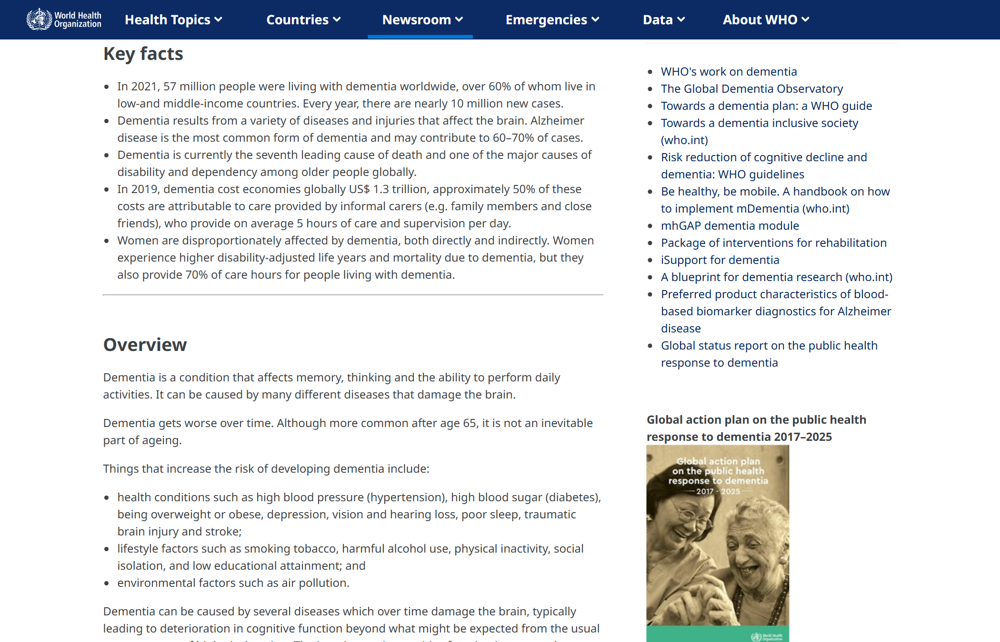
WHO Dementia fact sheet（2026-07-03）｜衛福部臺灣社區失智症流行病學調查（109–112 年）
全球層級，WHO 2026 年 7 月更新的資料：2021 年有 5,700 萬名失智者，每年近 1,000 萬新病例，失智症是第七大死因。
台灣：衛福部委託國衛院在 109 到 112 年做的全國社區調查，65 歲以上盛行率 7.99%，女性高於男性；
推估 2024 年約 35 萬人，2041 年接近 68 萬人。
盛行率沒有上升，人數卻翻倍，驅動力是人口老化。
提醒同學區分盛行率與人數：盛行率接近持平，人數卻因高齡化快速增加，這對健保與長照的規劃影響很大。
從正常老化到失智症：四個階段的界線在「功能」
| 階段 | 主觀抱怨 | 客觀測驗 | 日常功能 | 臨床重點 |
| 正常老化 | 偶爾健忘、提示後想得起 | 正常 | 完全獨立 | 健康生活與社交參與 |
| 主觀認知減退 SCD | 自覺明顯退步、持續擔心 | 正常 | 完全獨立 | 部分為最早期 AD；追蹤、處理情緒與睡眠 |
| 輕度認知障礙 MCI | 本人或家屬察覺 | 低於常模（約 1–1.5 SD） | 基本獨立，複雜事務較費力 | 65 歲以上追蹤 2 年累積失智率 14.9% |
| 失智症 | 常由家屬察覺 | 兩個以上領域明顯異常 | 需要他人協助 | 病因診斷、藥物與照護計畫 |
Petersen RC, et al. Neurology 2018;90:126-135. PMID 29282327（AAN MCI 指引；已由 AAN 列為退休版本，數字作為流行病學參考）
四個階段的關鍵差別在兩把尺：客觀測驗和日常功能。
SCD 是自己覺得變差、但測驗正常；
MCI 是測驗真的異常，但生活大致獨立；
失智症則是認知退化已經影響日常生活。
AAN 2018 指引的流行病學數字：MCI 盛行率從 60 到 64 歲的 6.7% 上升到 80 到 84 歲的 25.2%，65 歲以上 MCI 追蹤兩年的累積失智發生率 14.9%。
這份指引已被 AAN 列為退休，數字僅作為參考。
臨床上最常見的錯誤是把 SCD 當成正常或把 MCI 當成失智。
判斷的關鍵是有沒有客觀測驗證據與功能改變，並且要追蹤。
DSM-5-TR：重度與輕度認知障礙症（NCD）的四個條件
| 輕度 NCD（≈ MCI） | 重度 NCD（≈ 失智症） | |
| 測驗表現 | 約低於常模 1–2 SD（第 3–16 百分位） | 通常低於常模 2 SD 以上（第 3 百分位以下） |
| IADL | 仍獨立，但需更多努力 | 付帳單、服藥等需協助 |
American Psychiatric Association. DSM-5-TR. 2022. https://www.psychiatry.org/psychiatrists/practice/dsm
DSM-5-TR 的四個條件：A 認知下降，需要主觀擔憂加客觀證據；
B 是否影響獨立，這一點決定重度還是輕度；
C 排除譫妄；D 排除其他精神疾病。
重度 NCD 大致等同我們說的失智症，輕度 NCD 大致等同 MCI。
之後再加上病因標註，例如「由阿茲海默症所致」。
考試常考重度與輕度 NCD 的分界：是否影響日常生活的獨立性。
另外 DSM-5-TR 要求排除譫妄與其他精神疾病。
六大認知領域：病史會聽到什麼、床邊怎麼測
| 領域 | 家屬常描述 | 床邊測試 |
| 學習與記憶 | 同樣問題問好幾次、忘記剛發生的事 | 三個詞延遲回憶、故事回憶 |
| 複雜注意力 | 做事容易分心、算錢變慢 | 倒數 100 減 7、倒背數字 |
| 執行功能 | 無法規劃三餐、財務處理出錯 | 畫時鐘、連線測驗、語詞流暢度 |
| 語言 | 講不出名詞、講話變少或不流暢 | 命名、複述、理解複雜指令 |
| 知覺—動作 | 在熟悉的地方迷路、不會用工具 | 臨摹立方體、手勢模仿 |
| 社交認知 | 個性改變、不得體、失去同理心 | 觀察行為；知情者問卷 |
American Psychiatric Association. DSM-5-TR. 2022｜Nasreddine ZS, et al. J Am Geriatr Soc 2005;53:695-9. PMID 15817019
六個領域各舉一個家屬會講的例子與床邊測試。
問病史時請家屬舉具體例子：例如「同一件事問好幾次」指向情節記憶與海馬迴；
「在熟悉的地方迷路」指向視空間；
「個性變了、講話不得體」要想到額顳葉失智。
MoCA 比 MMSE 多了執行功能與視空間的題目。
請同學兩人一組，用三個詞延遲回憶與畫時鐘互相測試一次，體會床邊測試的操作。
時鐘測驗同時測執行功能與視空間。
三大症狀群 ABC：台灣失智者 66% 有至少一項行為精神症狀
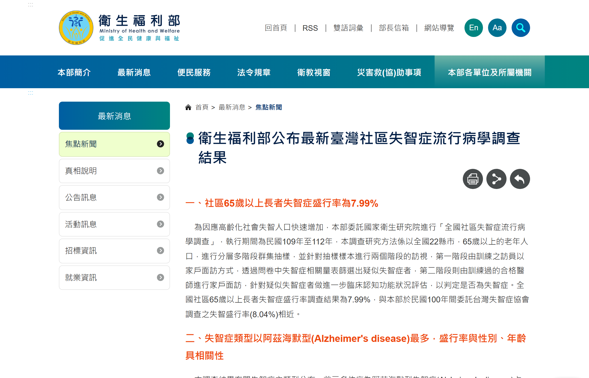
衛生福利部：臺灣社區失智症流行病學調查結果（109–112 年）https://www.mohw.gov.tw/cp-16-78102-1.html
失智症的三大症狀群可以用 ABC 記：A 日常功能、B 行為精神症狀、C 認知。
臨床上最常讓家屬撐不下去的是 B。
衛福部這次社區調查發現 66.01% 的失智者至少有一項行為精神症狀，而且越嚴重越多。
這也是為什麼後面治療章節會獨立講 BPSD 的處置。
BPSD 常是家屬求助的真正原因。
問診時除了問記憶，也要主動問睡眠、情緒、妄想與攻擊行為。
譫妄、失智、憂鬱：三個最常被混淆的診斷
| 特徵 | 譫妄 Delirium | 失智症 Dementia | 憂鬱 Depression |
| 起病 | 急性，數小時到數天 | 隱微，數月到數年 | 數週到數月 |
| 病程 | 一天內起伏、夜間加重 | 緩慢漸進（血管性可階梯式） | 與情緒同步 |
| 注意力與意識 | 注意力明顯受損、意識混濁 | 早期注意力多保留、意識清楚 | 注意力尚可，動機差 |
| 測驗表現 | 無法配合 | 盡力但答錯，常掩飾 | 常回答「不知道」、自己強調失憶 |
| 處置 | 找誘因：感染、藥物、電解質、疼痛 | 病因診斷、長期照護計畫 | 抗憂鬱治療後再評估認知 |
American Psychiatric Association. DSM-5-TR. 2022｜Hermann P, et al. Nat Rev Neurol 2022;18:363-376. PMID 35508635
三個最常混淆的診斷。譫妄的關鍵是急性起病、一天內起伏、注意力受損；
失智症是緩慢漸進、早期注意力大致保留；
憂鬱的病人常常自己強調記憶很差，測驗時回答不知道。
三者不互斥：失智症病人更容易發生譫妄，而晚發的憂鬱也可能是退化疾病的前驅期。
病房會診時先想譫妄：急性起病、注意力不集中、一天內起伏。
找誘因包括感染、藥物、電解質、疼痛、尿滯留與便秘。
病史是最好的診斷工具：五個問題與四個紅旗
數週到數月內快速惡化
局部神經學徵象、癲癇、肌躍症
早期步態異常、尿失禁或意識變化
Atri A, et al. Alzheimers Dement 2025;21:e14333. PMID 39713942｜Day GS. Continuum 2022;28:901-936. PMID 35678409
病史五個問題：第一個症狀、起病速度、功能變化、伴隨症狀、藥物與共病。
右邊四個紅旗代表不典型：年輕發病、快速進展、局部神經學徵象或肌躍症、早期步態與尿失禁。
出現紅旗要儘快做 MRI、腦波與腦脊髓液等進一步檢查。
問病史一定要有知情者，而且要分開問：病人常低估症狀，家屬有時也會誇大或淡化。
篩檢與分期工具：各有用途，沒有一個能單獨診斷
| 工具 | 對象 | 時間 | 滿分／判讀 | 特性 |
| MMSE | 病人 | 5–10 分 | 30 分；受教育程度影響 | 追蹤病程；健保用藥審查依據 |
| MoCA | 病人 | 10–15 分 | 30 分；教育 ≤ 12 年加 1 分 | 含執行功能、視空間；對 MCI 較敏感 |
| AD8 | 知情者 | 3 分 | 8 題；≥ 2 題改變視為異常 | 快速篩檢，不受病人教育影響 |
| CDR | 病人＋知情者 | 30–40 分 | 六個領域；0／0.5／1／2／3 | 半結構式訪談；嚴重度分期 |
Atri 2025 PMID 39713939｜Folstein 1975 PMID 1202204｜Nasreddine 2005 PMID 15817019｜Galvin 2005 PMID 16116116｜Morris 1993 PMID 8232972
四個常用工具。MMSE 最普及，也是健保審查依據，但受教育程度影響大、對 MCI 不敏感；
MoCA 加入執行功能與視空間，比較適合找 MCI；
AD8 是給知情者的八題問卷，兩題以上改變就算異常；
CDR 是半結構式訪談，用來分期。
沒有一個工具可以單獨診斷。
篩檢工具的切點會受教育程度與語言影響，台灣長者教育程度差異大，解讀時要考慮文化與教育背景。
CDR 分期：六個領域、五個等級，也是台灣長照與福利的門票
正常
極輕度／可疑
輕度
中度
重度
| 台灣實務用途 | 說明 |
| 健保用藥 | ChEI：MMSE 10–26 或 CDR 1–2；memantine：10 ≦ MMSE ≦ 14 或 CDR 2 |
| 長照與福利 | 身心障礙鑑定、長照服務與外籍看護申請常以 CDR 與醫師評估為依據 |
Morris JC. Neurology 1993;43:2412-4. PMID 8232972
CDR 評估六個領域：記憶、定向力、判斷與解決問題、社區事務、家居與嗜好、個人照料，每個領域分 0、0.5、1、2、3。
總分由記憶為主的規則推算。在台灣，CDR 不只用在研究，也是健保用藥、身障鑑定與長照資源申請的重要依據；
健保條文細節在治療章節第 85 頁。
CDR 需要受過訓練的評估者；
同學在見習時可以觀察個管師或醫師如何整合病人與照顧者的回答。
AA 2025 DETeCD-ADRD：評估分三步，最後一步是告知
Atri A, et al. Alzheimers Dement 2025;21:e14333. PMID 39713942（基層）｜Dickerson BC, et al. 2025;21:e14337. PMID 39713957（專科）
AA 2025 的 DETeCD-ADRD 指引，把評估拆成三個問題：病人的功能狀態、屬於哪一種認知行為症候群、最可能的腦部疾病是什麼，最後以病人為中心告知並擬定照護計畫。
它分成基層與專科兩份摘要，強調基層也要會做核心評估。
這份指引強調基層也要能完成核心評估，這和台灣推動的失智共同照護網絡方向一致。
可逆原因與必要檢驗：健保用藥前也要求這些
| 類別 | 項目 | 臨床意義 |
| 血液 | CBC、BUN／Cr、GOT／GPT、電解質、血糖 | 代謝性腦病變、貧血、肝腎功能 |
| 內分泌與維生素 | T4、TSH、維生素 B12（必要時葉酸） | 甲狀腺低下、B12 缺乏可改善 |
| 感染 | VDRL（梅毒）；高風險者 HIV | 神經梅毒可治療 |
| 影像 | CT 或 MRI（健保可接受 Hachinski 缺血量表替代） | 硬腦膜下出血、腫瘤、水腦、血管病變 |
| 藥物與情緒 | 抗膽鹼藥、BZD、鴉片類；憂鬱、睡眠呼吸中止 | 停藥或治療後常見改善 |
全民健康保險藥品給付規定 1.3.3 失智症治療藥品（114/10/1 修訂）｜Atri A, et al. 2025. PMID 39713942
健保 1.3.3 規定初次使用失智症藥物時，病歷要記錄影像或 Hachinski 量表、八項血液檢驗與智能測驗。
這其實就是一份最基本的可逆原因檢查清單。
再加上藥物檢視：抗膽鹼藥與鎮靜安眠藥是門診最常見、也最容易改善的原因。
可逆原因中最常見也最容易被忽略的是藥物，尤其是抗膽鹼藥物與苯二氮平類。
請同學把用藥清單當成神經學檢查的一部分。
台灣社區調查：阿茲海默型 57%、血管型 23%、巴金森相關 7%
衛生福利部：臺灣社區失智症流行病學調查結果（109–112 年）https://www.mohw.gov.tw/cp-16-78102-1.html
衛福部社區調查的類型分佈：阿茲海默型 56.88%、血管型 22.91%、巴金森病失智 7.12%。
剩下約 13% 是其他或未分類，這是我用 100% 扣掉的推算，不是官方數字。
要提醒同學：社區調查的分類是臨床診斷，病理研究顯示高齡者多半是混合病理。
社區調查的分類依賴臨床診斷，與病理研究的比例不同；
病理研究中混合病理非常常見。
同樣是「失智」，病因完全不同：四位公眾人物
家屬或官方公開聲明與報導；病理診斷以家屬公開資訊為準
四位公眾人物讓同學記得失智不是單一疾病。
雷根是阿茲海默症；羅賓·威廉斯生前以巴金森症狀與焦慮就醫，死後病理為瀰漫性路易體病；
柴契爾夫人在多次小中風後出現失智；
布魯斯·威利以失語症起病，後來家屬公佈為額顳葉失智。
這些資訊都來自家屬的公開聲明。
用名人案例幫助記憶，但提醒同學尊重病人隱私：臨床上不要在公開場合討論病人的診斷。
快速進展型失智（RPD）：數週到數月惡化，先找可治療的原因
| 類別 | 代表疾病 | 關鍵檢查 |
| 普利昂病 | 散發型庫賈氏病（CJD） | MRI DWI 皮質緞帶、基底核；CSF RT-QuIC；腦波週期性尖波 |
| 自體免疫 | 抗 LGI1、NMDAR 腦炎；橋本氏腦病變 | CSF、神經元抗體；對類固醇與免疫治療有反應 |
| 感染 | HSV 腦炎、神經梅毒、HIV | CSF PCR、VDRL、HIV |
| 代謝與中毒 | Wernicke、肝腎衰竭、藥物 | 電解質、氨、B1、藥物史 |
| 腫瘤與血管 | 淋巴瘤、腦膜轉移；血管炎、多發梗塞 | MRI 顯影、細胞學、血管影像 |
Hermann P, et al. Nat Rev Neurol 2022;18:363-376. PMID 35508635｜Day GS. Continuum 2022;28:901-936. PMID 35678409
快速進展型失智定義上是數週到數月、通常一到兩年內到失智程度。
原型是庫賈氏病，MRI 擴散加權的皮質緞帶徵象與腦脊髓液 RT-QuIC 是關鍵。
但一定要先找可治療的病因：自體免疫腦炎、感染、代謝中毒與腫瘤。
這類病人請住院做完整檢查。
RPD 的第一個問題是：有沒有可以治療的原因？
自體免疫腦炎錯過治療時機的代價很高。
第 1 章小結：先定階段、再定症候群、最後找病因
小結。面對每一位病人都走同一個框架：階段、症候群、病因、計畫。
接下來第二章進入最常見的病因：阿茲海默症。
第一章的框架請帶到病房：階段、症候群、病因、計畫。
下一章我們把焦點放在最常見的病因。
第二章是整堂課的核心：。
阿茲海默症從臨床診斷走到生物學診斷。
血液檢測正在改變基層與專科的分工。
請特別留意此處的臨床判讀細節。
請特別留意此處的臨床判讀細節。
請特別留意此處的臨床判讀細節。
典型阿茲海默症：從情節記憶開始，逐步擴及語言、視空間與執行功能
Jack CR Jr, et al. 2024. PMID 38934362｜Graff-Radford J, et al. Lancet Neurol 2021;20:222-234. PMID 33609479
典型阿茲海默症最早影響內嗅皮質與海馬迴，所以情節記憶先壞，而且是儲存障礙：自由回憶差、給提示也想不起來。
接著語言、視空間、執行功能陸續受影響。
晚期會出現吞嚥困難、肌躍症甚至癲癇。
病程長短差異很大，這裡的 8 到 10 年是教學上的粗略範圍。
情節記憶的儲存障礙與提取障礙可以用提示回憶來區分，這是床邊最有用的鑑別技巧之一。
病理：細胞外 Aβ 斑塊、細胞內 tau 纏結，tau 的分佈才與症狀同步
（transentorhinal）
Braak H, Braak E. Acta Neuropathol 1991;82:239-59. PMID 1759558｜Jack CR Jr, et al. Alzheimers Dement 2024;20:5143-5169. PMID 38934362
阿茲海默症的兩大病理：細胞外的 Aβ 斑塊與細胞內的 tau 纏結。
Braak 分期描述 tau 的擴散順序：一二期在內嗅皮質，多半沒有症狀；
三四期到海馬迴與邊緣系統，對應 MCI；
五六期到新皮質聯合區，對應失智。
臨床考點：斑塊多寡與認知相關性弱，tau 與突觸流失才與症狀同步。
病理與症狀的對應是考試重點：tau 的分佈比斑塊負擔更能解釋症狀。
APP 的兩條切割路徑：α 路徑不產生 Aβ，β→γ 路徑產生 Aβ42
Jack CR Jr, et al. 2024. PMID 38934362｜Heneka MT, et al. Lancet 2024;404:2198-2208. PMID 39549715
APP 是穿膜蛋白。α-分泌酶切在 Aβ 序列中間，後續 γ-分泌酶切出無害的 p3，這是非澱粉路徑。
若先由 β-分泌酶 BACE1 切、再由 γ-分泌酶切，就釋出 Aβ40 與 Aβ42；
Aβ42 容易聚集成寡聚體、原纖維與斑塊。
PSEN1、PSEN2 是 γ-分泌酶的催化次單元，突變使 Aβ42 比例上升。
後面講抗體時會回到這張圖：lecanemab 結合原纖維，donanemab 結合斑塊上的焦麩胺酸 Aβ。
請同學記住兩個酵素：BACE1 與 γ-分泌酶。
後面講抗體時，會回到 Aβ 聚集的不同階段。
生物標記時序：症狀出現前 15–20 年，類澱粉已經開始堆積
程度
Jack CR Jr, et al. Lancet Neurol 2013;12:207-16. PMID 23332364（假說模型示意，曲線非實測資料）
Jack 2013 的假說模型：Aβ 最早異常，接著 tau，然後是神經退化，最後才是記憶與臨床功能。
這張圖是示意，不是實測曲線。
它的臨床意義有兩面：一方面給了早期偵測與治療的時間窗，另一方面也提醒我們，許多 Aβ 陽性的高齡者一生都不會發病，這正是 IWG 反對純生物學定義的理由。
這張圖顯示出早期介入的邏輯，也顯示出生物標記陽性不等於會發病。
兩面都要講給病人聽。
遺傳：三個致病基因造成早發型；APOE ε4 是晚發型最強的風險基因
| 基因 | 染色體 | 類別 | 重點 |
| APP | 21 | 致病（顯性） | Aβ 產生或聚集增加；唐氏症多一套 APP |
| PSEN1 | 14 | 致病（顯性） | 最常見的家族性早發型基因，常 30–50 歲發病 |
| PSEN2 | 1 | 致病（顯性） | 外顯率與發病年齡變異較大 |
| APOE ε4 | 19 | 風險（劑量效應） | 單一套提高風險；同型合子近乎完全外顯（下頁） |
| APOE ε2 | 19 | 保護 | ε2/ε3 OR 0.6（白人臨床樣本） |
Farrer LA, et al. JAMA 1997;278:1349-56. PMID 9343467｜Fortea J, et al. Nat Med 2024;30:1284-1291. PMID 38710950
三個致病基因 APP、PSEN1、PSEN2 造成體染色體顯性的早發型 AD，佔不到 1%。
晚發型最重要的風險基因是 APOE。
Farrer 1997 的統合分析：白人 ε3/ε4 的勝算比 3.2、ε4/ε4 是 14.9；
日本族群更強，分別是 5.6 與 33.1。
ε2 則具保護效果。對東亞病人，APOE 在抗類澱粉抗體的 ARIA 風險評估上也特別重要。
東亞族群 APOE ε4 的效應更強，這對台灣病人的遺傳諮詢與 ARIA 風險評估都有意義。
APOE4 同型合子：幾乎完全外顯，應視為一種遺傳型 AD
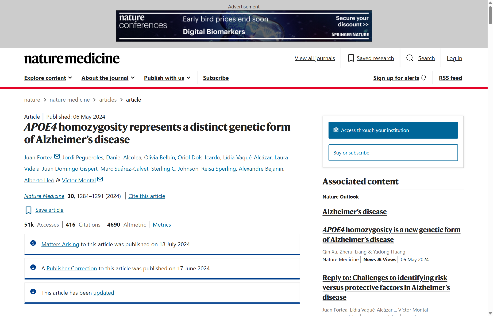
Fortea J, et al. Nat Med 2024;30:1284-1291. PMID 38710950
Fortea 2024 在 Nature Medicine 提出：APOE4 同型合子幾乎全部在 55 歲後出現 AD 生物標記，65 歲時 CSF 類澱粉幾乎都異常、類澱粉 PET 陽性率 75%，症狀發病中位 65.1 歲，時序可預測，類似體染色體顯性 AD 與唐氏症。
因此作者主張 APOE4/4 是一種遺傳型 AD，需要個人化的預防、試驗與治療策略。
實務上，這群人也是 ARIA 風險最高的族群。
APOE 基因檢測不建議用於一般民眾篩檢；
在考慮抗類澱粉治療時才有明確的臨床用途，而且需要諮詢。
AA 2024 修訂準則：AD 是生物學過程，Core 1 異常即可診斷
| 類別 | 生物標記 | 用途 |
| Core 1（早期） | 類澱粉 PET；核准的 CSF 標記（Aβ42/40、p-tau181/Aβ42 等）；準確的血漿標記（尤其 p-tau217） | 異常即足以診斷 AD，並支持臨床決策 |
| Core 2（晚期） | tau PET；MTBR-tau243 等後期體液標記 | 生物分期、預後；異常時更確定 AD 造成症狀 |
| 非特異 | 神經退化：MRI、FDG-PET、NfL；發炎：GFAP | 嚴重度與鑑別，不用於診斷 AD |
| 共病 | α-syn SAA；血管病變影像 | 辨識混合病理 |
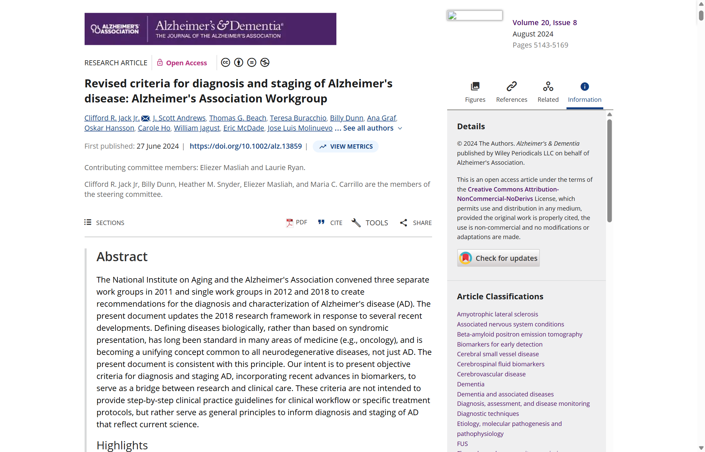
Jack CR Jr, et al. Alzheimers Dement 2024;20:5143-5169. PMID 38934362
AA 2024 準則的核心：AD 從無症狀期的神經病理變化開始。
Core 1 包括類澱粉 PET、核准的 CSF 標記與準確的血漿標記，特別是 p-tau217；
一項異常就足以診斷。Core 2 包括 tau PET 與後期體液標記，用來分期與判斷預後。
NfL 與 GFAP 屬非特異標記，不能用來診斷 AD。
Core 1 與 Core 2 是 AA 2024 準則的核心詞彙，請同學能說出各包含哪些檢查。
生物分期 A–D 與臨床分期 0–6：兩條軸並列
Jack CR Jr, et al. Alzheimers Dement 2024;20:5143-5169. PMID 38934362
AA 2024 把生物分期與臨床分期並列。
生物分期 A 到 D 依 tau PET 的擴散：A 是只有類澱粉，B 是內側顳葉 tau，C 與 D 是新皮質 tau 中度與高度。
臨床分期 0 到 6：0 是帶致病基因但無症狀，1 是生物標記異常但無症狀，2 是過渡期，3 是 MCI，4 到 6 是輕度到重度失智。
目前抗類澱粉抗體的適用族群就是臨床 3 到 4 期且 Core 1 陽性。
生物分期與臨床分期可能不同步：同樣是 MCI，tau 負擔可能很不一樣，這也影響抗體治療的效果。
IWG 2024 的反對意見：無症狀的類澱粉陽性者不應被稱為 AD
| 議題 | AA 2024 | IWG 2024 |
| 定義 | 純生物學：Core 1 異常即為 AD | 臨床—生物學構念：需要症候群＋生物標記 |
| 認知正常、類澱粉陽性 | AD（臨床分期 1） | 「AD 風險者」，不稱為 AD |
| 例外 | — | 特定生物標記型態、接近發病者可稱「症狀前 AD」 |
| 主要考量 | 與腫瘤學一致、便於早期治療試驗 | 多數陽性者短期內不會發病；告知造成傷害 |
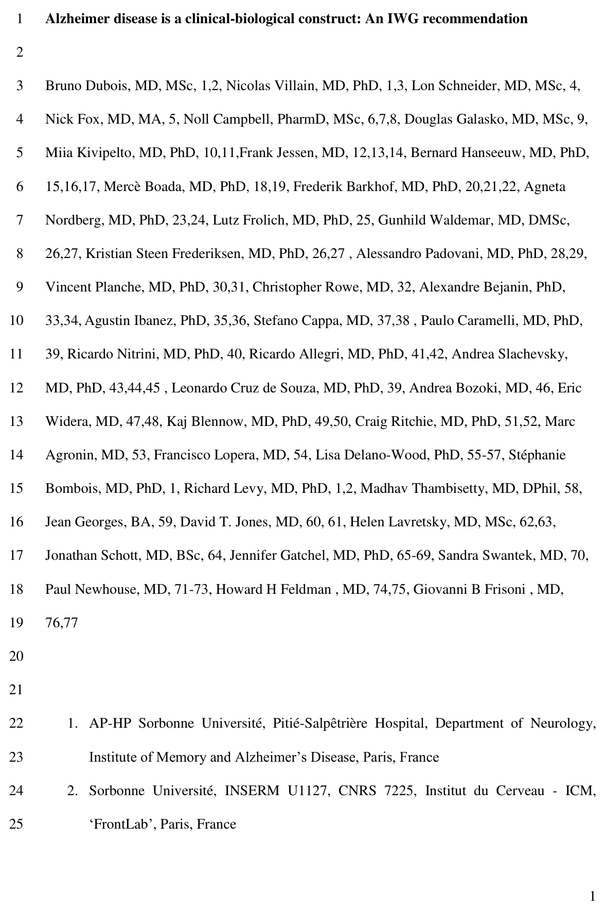
Dubois B, et al. JAMA Neurol 2024;81:1304-1311. PMID 39483064｜Jack CR Jr, et al. Alzheimers Dement 2024;20:5143-5169. PMID 38934362
IWG 2024 在 JAMA Neurology 發表不同立場：純生物學定義若用在臨床，會把大量認知正常、類澱粉陽性的人貼上 AD 標籤，而文獻顯示多數人短期內不會發病。
IWG 建議稱這群人為 AD 風險者，只有特定生物標記型態、接近發病者才稱症狀前 AD。
考試與臨床告知都要注意這兩種說法的差異。
請同學思考：如果一位認知正常的長輩血液檢測陽性，你會怎麼告知？
這正是兩派爭論的核心。
生物標記工具箱：侵入性、成本、可近性與回答的問題各不相同
| 工具 | 測量 | 優點 | 限制 |
| 類澱粉 PET | 腦內類澱粉斑塊（Centiloid） | 直接、可定量；抗體治療後追蹤清除 | 昂貴、輻射、台灣自費 |
| tau PET | 新皮質 tau 分佈 | 分期與預後最佳 | 研究為主，可近性低 |
| CSF | Aβ42/40、p-tau181、t-tau；α-syn SAA | 準確、可同時檢測共病 | 需腰椎穿刺 |
| 血漿 | p-tau217、%p-tau217、Aβ42/40 | 便宜、可近、可重複 | 各廠牌差異大；受腎功能影響 |
| MRI／FDG | 海馬迴萎縮、代謝型態；血管病變 | 鑑別診斷、ARIA 基線 | 非 AD 特異 |
Jack CR Jr, et al. 2024. PMID 38934362｜Palmqvist S, et al. 2025. PMID 40729527
五類工具各有角色。類澱粉 PET 直接看到斑塊，可以定量，也用來判斷抗體治療後是否清除；
tau PET 最能反映分期；
CSF 可以一次測類澱粉、tau 與 α-突觸核蛋白種子擴增；
血漿檢測便宜可近，但廠牌差異大，慢性腎病會讓 p-tau 偏高；
MRI 與 FDG 用於鑑別與 ARIA 基線。
血液檢測的普及會改變轉介流程，但也帶來偽陽性與過度診斷的風險，必須搭配完整的臨床評估。
血液檢測在基層：醫師判斷正確率 61%，加上 p-tau217 後 91%
| 族群（前瞻分析） | PPV | NPV |
| 基層 | 88% | 90% |
| 專科 | 91% | 91% |
Palmqvist S, et al. JAMA 2024;332:1245-1257. PMID 39068545
Palmqvist 2024 JAMA 的瑞典研究：1,213 位因認知症狀就診的病人。
基層醫師靠臨床、認知測驗與 CT 判斷 AD 的正確率只有 61%，專科醫師 73%；
改用血液 APS2 或 %p-tau217 都約 90%。
前瞻分析中基層的陽性預測值 88%、陰性預測值 90%。
要注意受試者有一半是 AD 病理陽性，在前測機率較低的族群，陽性預測值會降低。
這個研究最令人印象深刻的是基層醫師的準確度只有六成，提醒我們臨床判斷的侷限。
AA 2025 血液生物標記指引：兩個門檻、兩種用途、限專科與有症狀者
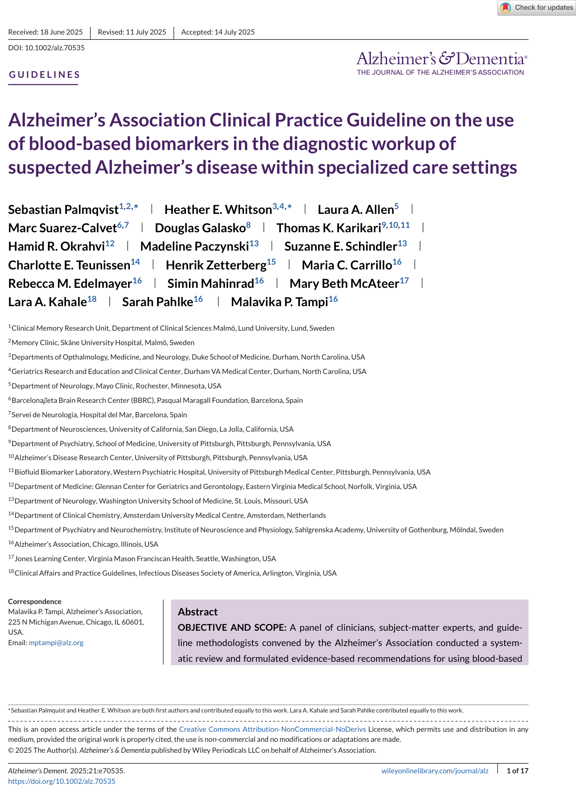
Palmqvist S, et al. Alzheimers Dement 2025;21:e70535. PMID 40729527
Palmqvist 2025 是 AA 第一份血液生物標記臨床實務指引，用 GRADE 方法。
兩個門檻：敏感度 90% 加特異度 75% 可以做分流；
兩者都 90% 以上，可以取代類澱粉 PET 或 CSF。
適用範圍限於記憶專科、已有客觀認知障礙者，不是無症狀篩檢。
指引也提醒很多市售檢測，特別是單一切點，達不到這兩個門檻。
兩個門檻是考題重點：分流 90 與 75、確認 90 與 90。
也要記得適用對象限有症狀、專科情境。
FDA 2025：兩項阿茲海默症血液檢測先後獲准上市
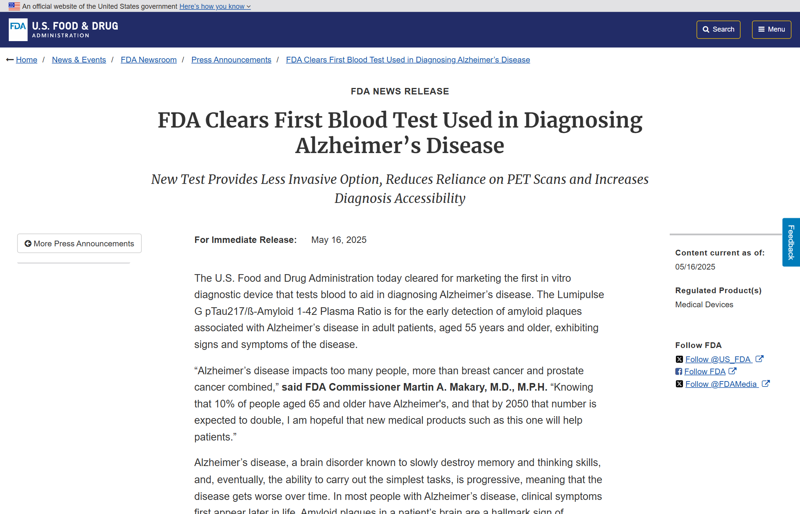
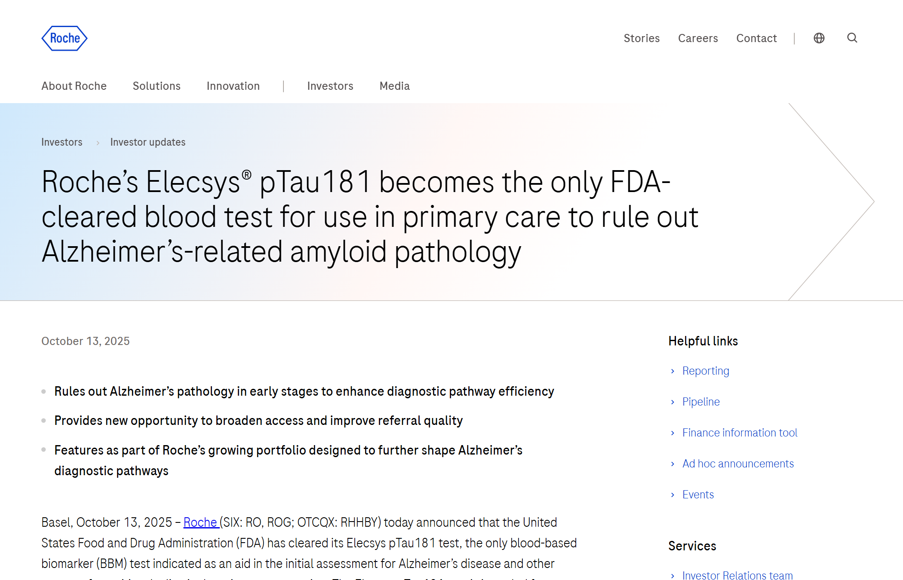
| 檢測 | 情境 | 表現 |
| Lumipulse p-tau217/Aβ42 比值 | 專科：協助確認 | 陽性者 91.7% 經 PET／CSF 證實；陰性者 97.3% 為陰性 |
| Elecsys p-tau181 | 基層：協助排除 | 陰性預測值 97.9% |
FDA 新聞稿 2025-05-16（fda.gov）｜Roche 投資人快訊 2025-10-13（roche.com）
2025 年兩項重要核准。5 月 FDA 核准 Fujirebio 的 Lumipulse p-tau217 與 Aβ42 比值，陽性者 91.7% 經 PET 或 CSF 證實有類澱粉，陰性者 97.3% 為陰性。
10 月 Roche 的 Elecsys p-tau181 獲准用於基層，定位是排除，陰性預測值 97.9%。
兩者都限 55 歲以上、已有認知症狀者。
台灣目前多數為自費或研究使用。
FDA 核准代表分析與臨床效能經過審查，但不等於所有情境都適用；
台灣目前的可近性與給付仍有限。
判讀血液結果：先想前測機率，再看是否落在灰區
Palmqvist S, et al. 2025. PMID 40729527｜Palmqvist S, et al. JAMA 2024. PMID 39068545
判讀血液結果先想前測機率。兩切點法把結果分成陰性、灰區與陽性：陰性去找其他病因，灰區要用 PET 或 CSF 確認或追蹤，陽性且檢測達確認門檻才支持 AD。
慢性腎病會讓 p-tau 偏高，這是最常見的偽陽性原因之一。
無症狀者不應做例行血液檢測。
判讀任何檢查都要先想前測機率，這是實證醫學的基本功，血液標記也不例外。
非典型 AD：不是每個 AD 都從記憶開始
| 亞型 | 核心症狀 | 萎縮／低代謝部位 |
| 典型失憶型 | 情節記憶障礙 | 內側顳葉、後扣帶迴、顳頂葉 |
| 語意缺詞型 PPA（lvPPA） | 找詞困難、句子複述差 | 左側後顳葉與下頂葉 |
| 後皮質萎縮（PCA） | 視空間、閱讀困難、Balint 症候群 | 雙側枕頂葉 |
| 皮質基底症候群（CBS） | 不對稱失用、肌躍、僵硬 | 不對稱額頂葉、感覺運動區 |
| 額葉型（行為／失執行） | 淡漠、脫抑制或執行障礙 | 額葉與顳頂葉；額葉相對較輕 |
Graff-Radford J, et al. Lancet Neurol 2021;20:222-234. PMID 33609479
非典型 AD 包括語意缺詞型 PPA、後皮質萎縮、皮質基底症候群與額葉型。
65 歲前發病的 AD 大約三分之一是非典型。
它們的生物標記都是 AD，但萎縮部位隨症候群而不同。
臨床上遇到年輕、以語言、視覺或動作起病的病人，生物標記可以幫助鑑別。
年輕病人以語言、視覺或行為起病時，別忘了非典型 AD；
這些病人常被誤診為精神疾病或眼科問題。
影像型態：MRI 看結構與血管，FDG 看代謝，PET 看分子
Jack CR Jr, et al. Alzheimers Dement 2024;20:5143-5169. PMID 38934362｜Graff-Radford J, et al. 2021. PMID 33609479
影像先排除其他病因，再支持 AD 型態。
MRI 看內側顳葉萎縮、血管病變與微出血，後者也是抗體治療前的 ARIA 基線。
FDG-PET 典型 AD 為顳頂葉與後扣帶低代謝；
DLB 常見枕葉低代謝而後扣帶迴相對保留，稱為後扣帶島徵象。
MRI 是抗類澱粉治療前的必要檢查，用來評估微出血與血管病變，也是 ARIA 監測的基線。
LATE：最常被誤認為 AD 的 TDP-43 病變
| 2025 臨床準則 | 條件 |
| 可能（probable）LATE | 進行性記憶喪失＋明顯海馬迴萎縮，且類澱粉生物標記陰性 |
| 可能性（possible）LATE | 無類澱粉資料；或類澱粉陽性但海馬迴退化與 AD 程度不成比例 |
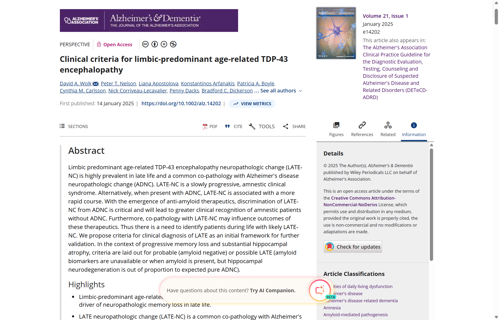
Nelson PT, et al. Brain 2019;142:1503-1527. PMID 31039256｜Wolk DA, et al. Alzheimers Dement 2025;21:e14202. PMID 39807681
LATE 是邊緣系統為主的年齡相關 TDP-43 腦病變。
Nelson 2019 的共識報告指出，社區解剖中約四分之一的腦有足以造成認知障礙的 LATE-NC。
Wolk 2025 提出第一份臨床準則：進行性記憶喪失加海馬迴明顯萎縮，類澱粉陰性為 probable；
類澱粉未知或陽性但萎縮與 AD 程度不成比例為 possible。
在抗類澱粉治療時代，辨識 LATE 可避免不必要的治療。
高齡者若記憶退化但類澱粉陰性，要想到 LATE；
這些病人不會從抗類澱粉治療受益。
高齡腦很少只有一種病變：混合病理降低發病門檻
斑塊＋纏結
梗塞、小動脈硬化
2 控制血管危險因子仍然有效
3 生物標記與治療反應可能不一致
Kapasi A, et al. Acta Neuropathol 2017;134:171-186. PMID 28488154｜Nelson PT, et al. 2019. PMID 31039256
Kapasi 2017 的綜述：高齡 AD 病人常合併血管病變、CAA、Lewy 體、TDP-43 與海馬迴硬化，這些共病會降低臨床失智的門檻。
所以單一病因標籤常不完整；同時也表示即使是 AD，控制血管危險因子仍有意義。
回到陳伯伯，他很可能就是混合型。
混合病理的觀念貫穿全課：它解釋了為什麼血管危險因子的控制對 AD 也有意義。
第 2 章小結：AD 已從「臨床排除診斷」走到「生物標記確認」
第二章小結五點。下一章進入另一類蛋白病：α-突觸核蛋白病，包括路易氏體失智、巴金森病失智與多系統萎縮，以及同屬 tau 病變的 PSP 與 CBD。
第二章結束。請同學用一句話說明 AA 2024 與 IWG 2024 的差別，作為自我檢核。
第三章處理「認知＋動作」的病人。
α-突觸核蛋白病包括巴金森病。
DLB 與 MSA；
PSP 與 CBD 則是 tau 病變。
但臨床上常與它們混淆。
路易氏體失智：波動、幻視、夢境演出、巴金森症
McKeith IG, et al. Neurology 2017;89:88-100. PMID 28592453
DLB 的四個核心特徵：認知波動、反覆視幻覺、REM 睡眠行為障礙、巴金森症。
病人早期注意力、執行功能與視空間較差，記憶相對保留。
臨床最重要的安全警告是抗精神病藥敏感，McKeith 2017 共識報告提到約半數病人對傳統抗精神病藥有嚴重反應。
DLB 病人第一次來常掛精神科或睡眠門診，因為幻視或夢境演出；
神經科醫師要主動詢問這些症狀。
DLB 第四版共識準則（2017）：核心特徵＋指示性生物標記
| 類別 | 內容 |
| 必要條件 | 足以妨礙日常功能的進行性認知退化；早期注意、執行、視空間障礙明顯 |
| 核心臨床特徵 | 認知波動｜反覆視幻覺｜REM 睡眠行為障礙｜一項以上巴金森症狀 |
| 指示性生物標記 | 基底核 DAT 攝取下降（SPECT／PET）｜MIBG 心肌閃爍攝影攝取低｜PSG 證實 REM 期無肌張力消失 |
| 很可能 DLB | ≥ 2 項核心特徵；或 1 項核心特徵＋≥ 1 項指示性生物標記 |
| 可能 DLB | 1 項核心特徵；或僅有 ≥ 1 項指示性生物標記 |
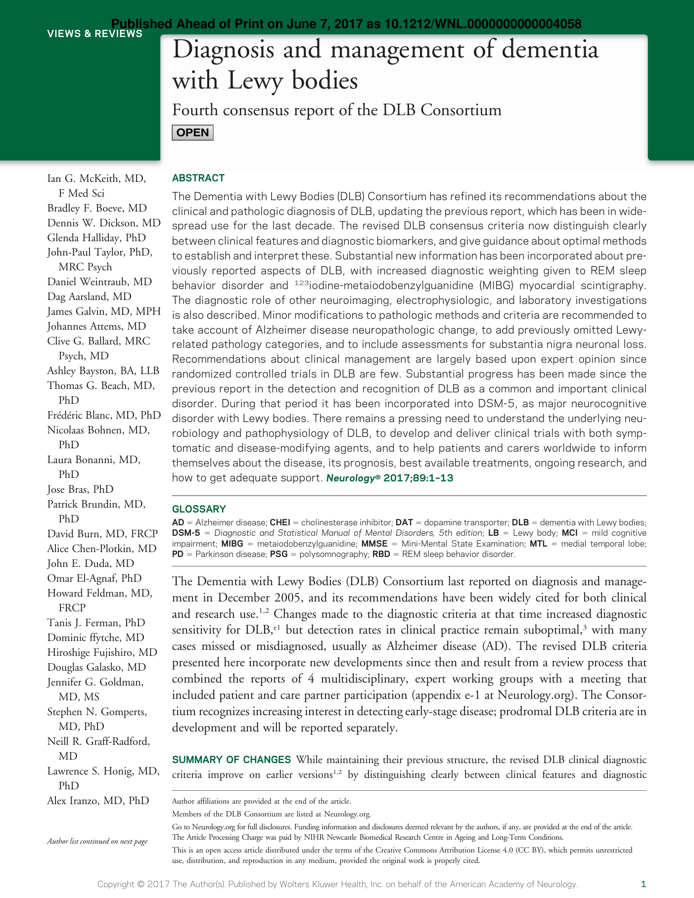
McKeith IG, et al. Neurology 2017;89:88-100. PMID 28592453
2017 年第四版 DLB 共識準則清楚區分臨床特徵與生物標記。
四個核心特徵中 RBD 升格為核心；
指示性生物標記有三項：DAT 影像、MIBG 心肌閃爍攝影、多導睡眠圖。
兩項以上核心特徵，或一項核心加一項指示性標記，就是很可能 DLB。
支持性特徵還包括自律神經失調、嗅覺減退、姿勢不穩與反覆跌倒等。
RBD 的診斷最好有多導睡眠圖證實，臨床上也可以問床伴：是否在夢中喊叫、揮拳或踢腳。
前驅期 DLB（2020 研究準則）：三種不同的起點
McKeith IG, et al. Neurology 2020;94:743-755. PMID 32241955
McKeith 2020 提出前驅期 DLB 的三種表現：MCI、譫妄起病與精神症狀起病。
目前只有 MCI-LB 有操作化的研究準則，另外兩型證據不足，但臨床上要提高警覺。
例如老年人第一次出現幻視、晚發性精神病，或手術後譫妄遲遲不恢復。
前驅期 DLB 的概念提醒我們：老年人第一次出現的精神症狀，要先排除神經退化疾病。
Lewy 病理的擴散：Braak PD 分期由延腦與嗅球開始，最後到新皮質
Braak H, et al. Neurobiol Aging 2003;24:197-211. PMID 12498954｜Horsager J, et al. Parkinsonism Relat Disord 2024. PMID 38519273
Braak 2003 描述巴金森病的 Lewy 病理擴散：一二期在延腦迷走神經背核與嗅球，對應便秘與嗅覺減退；
三四期到中腦黑質，動作症狀出現；
五六期到新皮質，出現認知障礙。
這個上行模式不適用於所有病人，後面會講身體先發與大腦先發的兩種亞型。
Braak 模型是教學上的簡化；
不是每位病人都遵循這個順序，這也引出身體先發與大腦先發的討論。
α-syn 種子擴增檢測（SAA）：活體偵測 Lewy 病理
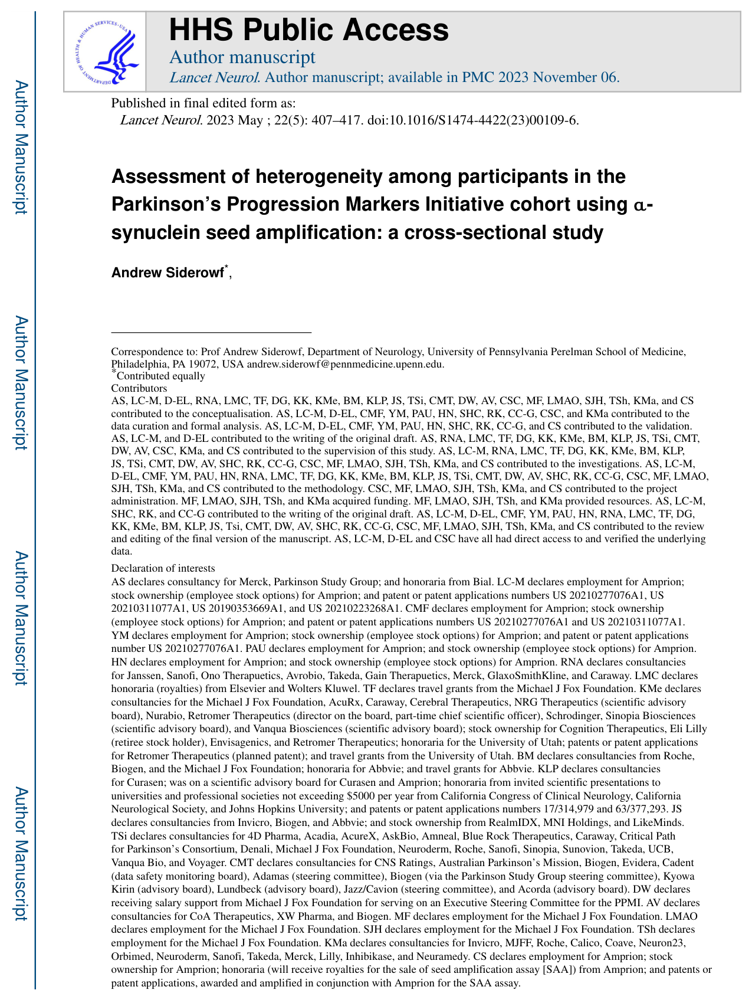
Siderowf A, et al. Lancet Neurol 2023;22:407-417. PMID 37059509
Siderowf 2023 用 PPMI 世代研究評估腦脊髓液 α-syn SAA。
全部巴金森病的敏感度 87.7%，特異度 96.3%；
典型嗅覺減退的散發型病人敏感度高達 98.6%。
LRRK2 突變的病人只有 67.5% 陽性，提示部分 LRRK2 病人沒有 Lewy 病理。
前驅族群 51 人中 44 人陽性，無症狀基因帶因者 310 人中 25 人陽性。
圖中健康對照的 3.7% 與前驅 86.3% 是由原文數字換算。
SAA 讓活體偵測 α-突觸核蛋白病理成為可能，但目前多用於研究與特殊鑑別，不是常規檢查。
2024 生物學定義：神經元 α-突觸核蛋白病（NSD）與整合分期
| 分期 | 定義 |
| 0 | SNCA 致病變異，無其他異常 |
| 1A／1B | S 陽性（1A）；S＋D 陽性（1B）；無症狀 |
| 2A／2B | 輕微徵象或症狀、無功能損害（2B 需 S＋D） |
| 3–6 | S＋D；功能損害由輕到重 |
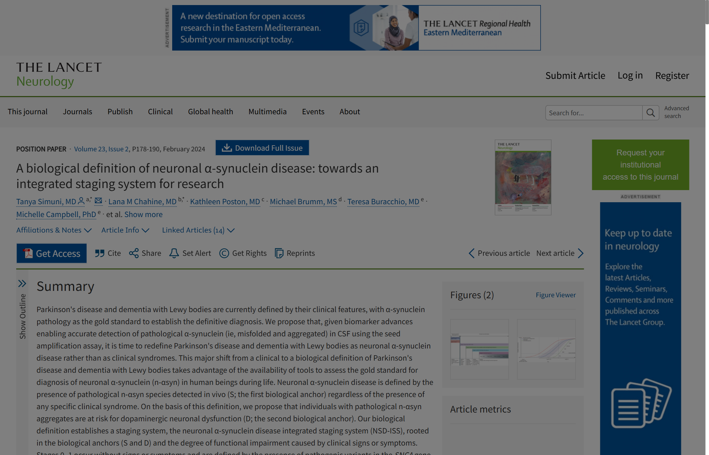
Simuni T, et al. Lancet Neurol 2024;23:178-190. PMID 38267190
Simuni 2024 提出把巴金森病與 DLB 重新定義為神經元 α-突觸核蛋白病。
兩個生物錨點：S 是病理性 α-syn，目前以 SAA 偵測；
D 是多巴胺功能障礙，以 DAT 影像評估。
0 期是 SNCA 致病變異；
1A 只有 S，1B 有 S 與 D；
2 期有輕微症狀但無功能損害；
3 到 6 期功能損害逐漸加重。
作者明白表示目前只供研究使用。
生物學定義的目的是讓試驗能在症狀前收案，臨床告知無症狀者仍需謹慎。
SynNeurGe：另一套生物學分類——S、N、G 加上臨床 C
Höglinger GU, et al. Lancet Neurol 2024;23:191-204. PMID 38267191
SynNeurGe 是與 NSD-ISS 同期發表的另一套生物學分類：S 是 α-syn、N 是神經退化、G 是基因，再連結臨床 C。
它的特點是可以描述沒有 α-syn 病理的巴金森病，例如部分 LRRK2 或 PRKN 病人。
兩套系統的目的相同：讓疾病修飾試驗能在症狀前收案。
比較兩套系統時，請同學注意它們對 LRRK2 等沒有 α-syn 病理病人的處理方式不同。
PDD 還是 DLB？一年法則
| DLB | PDD | |
| 研究與臨床的意義 | 時間法則主要用於研究分組 | 臨床上兩者屬同一病理連續譜 |
| 台灣健保 | ChEI 依 AD 條文（需符合 AD 或 PD 失智診斷） | rivastigmine 限神經科；PD 診斷後至少一年發生失智 |
McKeith IG, et al. Neurology 2017;89:88-100. PMID 28592453｜全民健康保險藥品給付規定 1.3.3（114/10/1）
一年法則：失智先出現、或在巴金森動作症狀出現一年內出現，稱 DLB；
巴金森病確立一年以上才失智，稱 PDD。
共識報告說明這個法則主要用於研究分組，臨床上兩者屬同一病理連續譜。
健保 1.3.3 對 PDD 的 rivastigmine 規定限神經科，且失智發生於 PD 診斷一年以後。
一年法則是人為的分界，臨床上更重要的是處置原則相同。
DLB 與 PDD 的治療：膽鹼藥物效果較好，抗精神病藥要非常小心
| 症狀 | 首選策略 | 注意 |
| 認知與幻覺 | ChEI（rivastigmine、donepezil） | 膽鹼缺損比 AD 更嚴重，反應常較明顯 |
| 精神病症狀 | 先減抗巴金森藥物；必要時低劑量 quetiapine 或 clozapine；pimavanserin（PD 精神病） | 避免 haloperidol 等 D2 強效拮抗劑 |
| 巴金森症 | levodopa 單方、低劑量緩慢調整 | 可能誘發幻覺；DLB 反應常不如 PD |
| RBD | 褪黑激素；clonazepam（注意跌倒、呼吸） | 床邊環境安全 |
| 自律神經 | 姿勢性低血壓：補水、彈性襪、midodrine／droxidopa | 便秘與尿失禁需主動詢問 |
McKeith IG, et al. Neurology 2017;89:88-100. PMID 28592453｜Cummings J, et al. Lancet 2014;383:533-40. PMID 24183563
DLB 與 PDD 的治療是在多個症狀間取捨。
膽鹼缺損比 AD 更嚴重，ChEI 效果常較明顯，也可改善幻覺。
精神病症狀先減少抗巴金森藥物，必要時用低劑量 quetiapine 或 clozapine；
pimavanserin 在 2014 年的第三期試驗改善巴金森病精神病。
絕對避免 haloperidol。
levodopa 用最低有效劑量。
台灣 pimavanserin 的上市與給付狀態請以食藥署與健保署最新公告為準（尚待確認）。
DLB 病人住院時最常發生的醫療錯誤是給予 haloperidol，請在病歷與交班中特別註明抗精神病藥敏感。
多系統萎縮（MSA）：MDS 2022 準則，自律神經失調是核心
| 項目 | 臨床確立 MSA 的要點 |
| 基本條件 | 30 歲後起病、散發、進行性 |
| 自律神經 | 排尿困難伴殘尿 ≥ 100 mL、急迫性尿失禁，或 3 分鐘內神經性姿勢性低血壓 ≥ 20／10 mmHg |
| 動作 | 對 levodopa 反應不佳的巴金森症（MSA-P）及／或小腦症候群（MSA-C） |
| 支持特徵 | 快速進展、早期跌倒、顏面頸部肌張力異常、吸氣喘鳴、快速動作睡眠行為障礙等 |
| MRI | 殼核、橋腦、小腦中腳萎縮；「十字麵包」徵象 |
Wenning GK, et al. Mov Disord 2022;37:1131-1148. PMID 35445419
MSA 的 MDS 2022 準則新增臨床確立與臨床很可能兩個類別。
臨床確立需要自律神經失調加上對 levodopa 反應不佳的巴金森症或小腦症候群，並需至少一項 MRI 標記。
自律神經的操作定義：殘尿 100 毫升以上的排尿困難、急迫性尿失禁，或 3 分鐘內收縮壓降 20、舒張壓降 10 的神經性姿勢性低血壓。
支持特徵的完整清單請見原文。
MSA 病人常先到泌尿科或心臟科，因為排尿問題或姿勢性低血壓；
早期嚴重自律神經失調是重要線索。
進行性上眼神經核麻痺（PSP）：MDS 2017 準則的四個功能領域
Höglinger GU, et al. Mov Disord 2017;32:853-864. PMID 28467028
PSP 的 MDS 2017 準則把臨床特徵分成四個領域：眼動 O、姿勢不穩 P、動作不能 A、認知 C，每個領域各有三級。
最典型的是 Richardson 症候群：垂直凝視麻痺或眼跳變慢，加上三年內反覆跌倒。
其他變異型包括 PSP 巴金森型、步態凍結型、語言型與 CBS 型。
PSP 床邊檢查一定要看垂直眼跳的速度，而不只是眼球能不能動到位。
病例：63 歲吳先生，說話費力、右手不靈活、刺激誘發肌躍
| 吳先生的表現 | 對應 CBS 準則 |
| 右手僵硬、動作遲緩 | 肢體僵硬或動作不能（不對稱） |
| 痛刺激誘發肌躍 | 肢體肌躍症 |
| 右手失用、不會用筷子 | 肢體失用 |
| 說話費力、不流利 | 非流暢／語法缺失型失語（naPPA） |
Armstrong MJ, et al. Neurology 2013;80:496-503. PMID 23359374
回到舊講義的病例吳先生：非流暢性失語、右手僵硬、失用與刺激誘發肌躍，符合皮質基底症候群。
Armstrong 2013 準則把 CBD 的表現型分成 CBS、額葉行為空間症候群、naPPA 與 PSP 症候群。
要強調 CBS 是臨床診斷，病理可能是 CBD、PSP，也可能是 AD，所以類澱粉與 tau 生物標記有鑑別價值。
吳先生的病例說明症候群與病理的分別：CBS 是臨床症候群，病理需要進一步確認。
巴金森症候群鑑別矩陣：先看 levodopa 反應、眼動、自律神經與失用
| 特徵 | PD | DLB | MSA | PSP | CBS |
| levodopa 反應 | 佳 | 中等 | 差 | 差 | 差 |
| 早期失智 | 少 | 核心 | 少 | 額葉型 | 常見 |
| 視幻覺 | 晚期 | 早期核心 | 少 | 少 | 少 |
| 自律神經 | 中晚期 | 常見 | 早期嚴重 | 少 | 少 |
| 特徵徵象 | 靜止型顫抖 | 波動、RBD | 喘鳴、小腦 | 垂直凝視麻痺 | 失用、異手 |
| 不對稱 | 是 | 常對稱 | 可 | 對稱 | 明顯不對稱 |
McKeith 2017 PMID 28592453｜Wenning 2022 PMID 35445419｜Höglinger 2017 PMID 28467028｜Armstrong 2013 PMID 23359374
鑑別矩陣。先看 levodopa 反應：PD 最好，DLB 中等，MSA、PSP、CBS 都差。
再看早期失智與幻覺：DLB。
早期嚴重自律神經失調：MSA。
垂直凝視麻痺與早期跌倒：PSP。
明顯不對稱的失用與異手：CBS。
這張表是教學用的簡化，個別病人會有例外。
鑑別矩陣可以在見習時當作查核表使用；
遇到 levodopa 反應不佳的巴金森症，一定要重新檢視診斷。
身體先發 vs 大腦先發：同一個巴金森病，兩條起點
Horsager J, et al. Parkinsonism Relat Disord 2024;122:106101. PMID 38519273
Horsager 等人的 α-突觸核蛋白起源與連接體模型：身體先發型從腸道神經系統經迷走神經上行，RBD、便秘與自律神經症狀先出現，較對稱，較多認知障礙；
大腦先發型從嗅球或杏仁核開始，動作症狀先出現。
2024 年的更新說分子影像研究大多支持，MRI 研究結果不一。
第十章講預防時會回到這個模型。
身體先發與大腦先發的模型把前驅症狀與腸腦軸連在一起，第十章談預防時會再用到。
第 3 章小結：認知＋動作的病人，先問 RBD、幻視與 levodopa 反應
第三章小結。下一章處理另一群以行為與語言起病的退化疾病：額顳葉失智，以及水腦與庫賈氏病等其他原因。
第三章結束。請同學說出 DLB 的四個核心特徵與三個指示性生物標記。
第四章講以行為與語言起病的額顳葉失智。
並補上兩個臨床上不能錯過的鑑別：。
常壓性水腦與庫賈氏病。
請特別留意此處的臨床判讀細節。
請特別留意此處的臨床判讀細節。
額顳葉失智：65 歲前常見，也最常被誤診為精神疾病
| 臨床表現型 | 主要症狀 |
| 行為型（bvFTD） | 人格改變、脫抑制、淡漠、失去同理心、刻板行為、飲食改變 |
| 語意型 PPA | 詞義與物體知識流失 |
| 非流暢型 PPA | 說話費力、語法錯誤、言語失用 |
| 合併運動神經元病 | FTD–ALS：C9orf72 最常見 |
Bang J, et al. Lancet 2015;386:1672-82. PMID 26595641｜Ducharme S, et al. Brain 2020;143:1632-1650. PMID 32129844
額顳葉失智是一群以行為、執行功能或語言進行性退化為主的疾病，在 65 歲以下特別常見。
Ducharme 2020 的國際共識指出，約半數 bvFTD 病人先被給予精神科診斷，平均延遲五到六年。
臨床表現型包括行為型、語意型與非流暢型 PPA，以及合併運動神經元病。
bvFTD 常以人格改變、衝動或社交不當表現，家屬常以為是中年危機或精神疾病。
bvFTD 國際準則（Rascovsky 2011）：六項中三項為「可能」
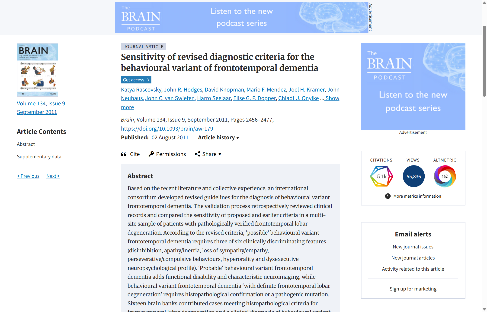
Rascovsky K, et al. Brain 2011;134:2456-77. PMID 21810890
Rascovsky 2011 的國際共識準則：六項特徵中至少三項為可能 bvFTD，分別是早期脫抑制、早期淡漠、早期失去同理心、刻板或強迫行為、口慾增加與飲食改變，以及執行功能障礙但記憶與視空間相對保留的神經心理型態。
加上功能退化與額葉或前顳葉影像證據為很可能，有病理或致病突變為確定。
準則中的「早期」通常指症狀出現後三年內；
考題常要求列出六項特徵。
原發性漸進性失語（PPA）三變異型：說話、理解、複述各壞在哪裡
| 變異型 | 核心特徵 | 相對保留 | 萎縮部位 | 常見病理 |
| 非流暢／語法缺失型 nfvPPA | 語法錯誤、說話費力、言語失用 | 單詞理解、物體知識 | 左下額迴、島葉 | FTLD-tau（PSP、CBD） |
| 語意型 svPPA | 命名困難、單詞理解受損 | 複述、語法、流暢度 | 前顳葉（多左側） | FTLD-TDP type C |
| 缺詞型 lvPPA | 找詞困難、句子複述差 | 單詞理解、語法 | 左後顳葉與下頂葉 | AD 病理最常見 |
Gorno-Tempini ML, et al. Neurology 2011;76:1006-14. PMID 21325651
PPA 三變異型。非流暢型：語法錯誤、說話費力，常見 tau 病理；
語意型：命名與單詞理解受損，複述保留，多為 TDP-43 type C；
缺詞型：找詞困難、句子複述差，背後最常是 AD 病理。
所以語言型病人，特別是 lvPPA，值得做類澱粉生物標記。
PPA 的分型可以用三個問題：說話是否費力、單詞是否聽得懂、句子能否複述。
FTLD 病理：三大蛋白家族，臨床表現型與病理並非一對一
Bang J, et al. Lancet 2015;386:1672-82. PMID 26595641
FTLD 依沉積蛋白分三大家族：tau、TDP-43 與 FET。
tau 類包括 Pick 病、PSP、CBD 與 MAPT 突變；
TDP-43 類與 GRN、C9orf72 突變相關，語意型 PPA 多為 type C；
FET 類少見，常是年輕、行為症狀嚴重的 bvFTD。
重點是臨床表現型與病理並非一對一。
臨床表現與病理不是一對一，這是 FTLD 最困難的地方，也是生物標記研究的重點。
遺傳型 FTD：三個主要基因，一個家族可同時出現 FTD 與 ALS
| 基因 | 遺傳 | 常見表現 | 病理 |
| C9orf72（重複擴增） | 體染色體顯性 | bvFTD、FTD–ALS；常合併精神病症狀 | TDP-43 type B |
| MAPT | 體染色體顯性 | bvFTD、PSP 或 CBS 樣表現 | tau |
| GRN（progranulin） | 體染色體顯性 | bvFTD、非流暢型 PPA；常不對稱 | TDP-43 type A |
| VCP、TARDBP、FUS、CHMP2B | 體染色體顯性 | 少見；可合併肌病變或 ALS | TDP-43 或 FUS 等 |
Bang J, et al. Lancet 2015;386:1672-82. PMID 26595641｜Strong MJ, et al. ALS FTD 2017;18:153-174. PMID 28054827
遺傳型 FTD 以三個基因為主：C9orf72、MAPT、GRN，都是體染色體顯性。
C9orf72 同時是 FTD 與 ALS 最常見的遺傳原因，常合併精神病症狀；
MAPT 對應 tau 病理；
GRN 對應 TDP-43 type A，常不對稱。
家族裡同時有失智與運動神經元病時，應轉介遺傳諮詢。
家族史詢問要擴大到精神疾病、運動神經元病與不明原因的早逝，C9orf72 家族常有這些表現。
ALS–FTD 光譜：超過一半的 ALS 病人有認知或行為障礙
Strong MJ, et al. Amyotroph Lateral Scler Frontotemporal Degener 2017;18:153-174. PMID 28054827
Strong 2017 修訂準則指出 ALS 的神經心理障礙影響超過一半的病人，而且與較短存活相關，所以把它視為光譜：從認知行為正常、單純認知或行為障礙、兩者皆有，到符合 FTD 準則。
臨床上 ALS 病人要篩檢認知與行為；
反過來，FTD 病人也要檢查有沒有下運動神經元徵象。
ALS 病人的認知與行為障礙會影響決策能力與照護規劃，應盡早評估。
FTD 治療：ChEI 與 memantine 無效，行為以非藥物與 SSRI 為主
| 問題 | 策略 | 證據與注意 |
| 認知 | 不用 ChEI／memantine | 無效；ChEI 可能加重行為症狀 |
| 脫抑制、強迫、口慾 | SSRI；trazodone | 小型試驗與臨床經驗 |
| 激躁、精神病 | 非藥物優先；必要時低劑量非典型抗精神病藥 | 注意錐體外症狀與死亡風險 |
| 安全與法律 | 駕駛、財務、衝動購物、性行為 | 早期討論監護與預立醫療決定 |
| 家屬 | 遺傳諮詢、照顧者支持團體 | 照顧負擔高於 AD |
NICE NG97（2018）https://www.nice.org.uk/guidance/ng97｜Bang J, et al. Lancet 2015. PMID 26595641
FTD 目前沒有核准的疾病修飾藥物。
NICE 2018 明確建議不要用 ChEI 或 memantine 治療 FTD，ChEI 還可能讓行為更糟。
行為症狀以非藥物介入為主，SSRI 與 trazodone 有小型試驗支持。
早期要討論駕駛、財務與法律安排，並提供遺傳諮詢與照顧者支持。
FTD 的照護壓力很大，病人常無病識感；
照顧者支持與安全規劃是治療的核心。
特發性常壓性水腦（iNPH）：步態、認知、尿失禁，可能因分流而改善
Nakajima M, et al. Neurol Med Chir (Tokyo) 2021;61:63-97. PMID 33455998
日本 2021 年第三版 iNPH 指引。
三主徵中步態障礙最早出現、對分流反應最好。
影像上腦室擴大且 Evans index 大於 0.3，並有 DESH 型態。
腰椎放液試驗放出約 30 毫升腦脊髓液，觀察步態與認知改善，作為手術選擇參考。
要記得 iNPH 常合併 AD 或血管病變。
iNPH 是少數可以透過手術改善的失智原因之一，但要仔細評估共病與手術風險。
散發型庫賈氏病：快速進展、肌躍症、RT-QuIC 讓生前確診成為可能
| 項目 | 典型發現 |
| 臨床 | 數週到數月的快速失智；肌躍症、小腦或錐體外症狀、視覺症狀、無動性緘默 |
| MRI | DWI／FLAIR：皮質緞帶徵象、尾狀核與殼核高訊號 |
| 腦波 | 週期性尖銳波複合體（病程中後期） |
| CSF | RT-QuIC 陽性（特異度極高）；14-3-3、總 tau 升高（支持性） |
Hermann P, et al. Lancet Neurol 2021;20:235-246. PMID 33609480｜Hermann P, et al. Nat Rev Neurol 2022. PMID 35508635
散發型庫賈氏病是錯誤摺疊的普利昂蛋白造成的致死性疾病。
典型病人數週到數月內快速失智，合併肌躍症。
MRI 擴散加權的皮質緞帶與基底核高訊號很有價值。
Hermann 2021 回顧指出 RT-QuIC 是生前確診的重大突破。
台灣的庫賈氏病屬法定傳染病，須依規定通報，並依感染管制處理器械。
庫賈氏病的診斷會影響整個團隊的感染管制與器械處理，懷疑時要及早通報與諮詢。
病例思考：58 歲男性，一年來變得衝動、亂買東西、嗜吃甜食
Ducharme S, et al. Brain 2020;143:1632-1650. PMID 32129844
病例思考：中年男性出現衝動、亂買東西、嗜甜。
Ducharme 2020 的國際共識建議結構化評估：知情者病史、社交認知與執行功能測驗、MRI 與必要時 FDG-PET，以及 NfL。
NfL 在神經退化時升高，在原發性精神疾病通常正常，這是近年很有用的鑑別工具。
本病例為教學情境。
這個病例提醒我們：精神科與神經科要合作，NfL 等體液標記正逐漸成為重要的鑑別工具。
第 4 章小結：行為語言起病想 FTD；快速或步態先壞想 CJD、NPH
第四章小結。下一章回到開場病例陳伯伯：血管性認知障礙，以及 2025 年新的 VasCog-2-WSO 準則。
第四章結束。請同學說出 PPA 三變異型各自最常見的病理。
第五章回到陳伯伯。血管性認知障礙是第二常見的失智原因。
也是最有機會預防的一類。
2025 年發表了新的 VasCog-2-WSO 準則。
請特別留意此處的臨床判讀細節。
請特別留意此處的臨床判讀細節。
回到陳伯伯：階梯式退化、步態不穩、頻尿，符合哪一種準則？
| 線索 | 意義 |
| 血管危險因子＋ TIA | 腦血管病變的前測機率高 |
| 階梯式或與中風相關的退化 | 2025 準則：中風後 ≥ 3 個月仍持續的認知缺損 |
| 反覆問問題、迷路 | 可能合併 AD：高齡最常見的是混合型 |
| 步態不穩、頻尿、嗆咳 | 皮質下病變的常見伴隨症狀；新準則不再列為支持條件 |
神經心理：處理速度與執行功能
必要時 AD 生物標記
Dichgans M, Leys D. Circ Res 2017. PMID 28154105｜VasCog-2-WSO. JAMA Neurol 2025. PMID 40955506
陳伯伯有血管危險因子與疑似 TIA，認知退化以執行功能與處理速度為主，合併步態與排尿症狀。
要提醒同學：2025 年新準則因為特異性不足，不再把步態障礙與頻尿列為支持條件。
高齡病人最常見的是血管與 AD 的混合型，所以必要時仍要做 AD 生物標記。
請同學先回答：陳伯伯的步態與頻尿，在新準則中還算支持條件嗎？
答案是不算，因為特異性不足。
VCI 的機轉：從血管病變到網路斷連
與微結構破壞
連結喪失
（執行、速度）
Dichgans M, Leys D. Circ Res 2017;120:573-591. PMID 28154105
Dichgans 2017 的綜述把 VCI 的原因分成大血管、小血管、出血與低灌流。
近年的重點是微梗塞、微出血、關鍵白質徑路與繼發性神經退化，最終造成結構與功能連結喪失、網路失效。
VaD 是第二常見的失智類型，且血管病理常與 AD 共存，這正是預防的切入點。
血管性認知障礙的機轉提醒我們，保護血管就是保護大腦的網路連結。
STRIVE-2：小血管病的 MRI 標記，要用同一套語言描述
| 標記 | MRI 序列 | 描述要點 |
| 近期小皮質下梗塞 | DWI | 穿通動脈供血區、急性 |
| 血管源性腔隙 | FLAIR、T1 | 3–15 mm 充液空腔，周圍常有高訊號環 |
| 白質高訊號（WMH） | FLAIR | Fazekas 分級；融合程度 |
| 血管周圍間隙擴大 | T2 | 基底核與半卵圓中心；嚴重時提示 CAA 或高血壓 |
| 腦微出血 | SWI／T2* | 深部（高血壓）vs 嚴格腦葉（CAA） |
| 皮質表面含鐵血黃素沉積 | SWI／T2* | CAA 的重要標記；ARIA-H 基線 |
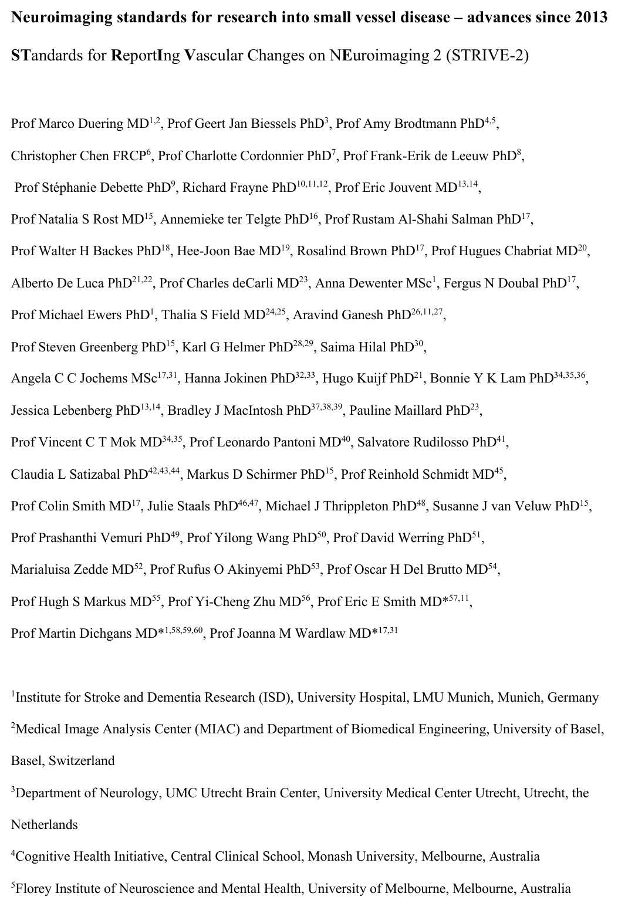
Duering M, et al. Lancet Neurol 2023;22:602-618. PMID 37236211
STRIVE 是小血管病影像的共同語言。
主要標記：近期小皮質下梗塞、血管源性腔隙、白質高訊號、血管周圍間隙擴大、微出血與皮質表面含鐵血黃素沉積。
STRIVE-2 在 2023 年更新，加入定量影像與病灶—症狀型態。
微出血的分佈很重要：深部多為高血壓性，嚴格腦葉提示 CAA。
判讀 MRI 時請用 STRIVE 的術語，避免使用含糊的「腦部退化」或「小中風」等描述。
VasCog-2-WSO（2025）：VCID 分三個層級，並新增「前臨床」
| 確定程度 | 條件 |
| 很可能（probable） | 臨床符合，且有影像或單基因小血管病（如 CADASIL）支持 |
| 可能（possible） | 僅臨床符合，暫缺影像或基因證據 |
VasCog-2-WSO Criteria Consortium. JAMA Neurol 2025;82:1103-1112. PMID 40955506
2025 年的 VasCog-2-WSO 準則把 VCID 分成三個層級：前臨床或高風險、血管性 MCI、血管性失智。
vaMCI 是一個以上領域輕度缺損，約 1 到 2 個標準差，日常功能獨立但較費力；
VaD 是明顯缺損、需要協助。
很可能 VCID 需要臨床加影像或單基因小血管病證據；
只有臨床符合為可能。
前臨床 VCID 的概念把預防提前到影像發現的階段，這與台灣健檢普遍做腦部影像的現況有關。
血管病因的兩條臨床路徑與影像門檻
| 影像門檻 | 內容（擇一） |
| 梗塞 | 多發梗塞，或單一大型／關鍵部位梗塞（視丘、海馬等） |
| 腔隙 | 腦幹外 ≥ 2 個；或 1 個關鍵腔隙＋廣泛 WMH |
| 白質 | 廣泛融合 WMH（如 Fazekas 腦室旁 3、深部 2–3） |
| 出血 | 單一大型或腦葉出血，或 ≥ 2 個腦內出血 |
VasCog-2-WSO Criteria Consortium. JAMA Neurol 2025;82:1103-1112. PMID 40955506｜Duering M, et al. 2023. PMID 37236211
VasCog-2-WSO 的血管病因需要臨床與影像雙重證據。
臨床有兩條路：中風後三個月以上仍持續，或沒有中風史但以注意、速度、執行功能為主的漸進退化。
影像門檻擇一：多發或關鍵部位梗塞、腦幹外兩個以上腔隙、廣泛融合的白質高訊號，或大型、腦葉或兩個以上的出血。
這些操作化的數字是本次改版的重點。
準則的影像門檻是本次改版最實用的部分，見習時可以拿病人的 MRI 報告練習對照。
準則演進：從 2011 到 2025，影像門檻愈來愈明確
| 年份與準則 | 認知門檻 | 血管病因證據 | 特點 |
| 2011 AHA/ASA VCI | 失智 ≥ 2 領域；MCI ≥ 1 | 臨床 ± 影像，無統一門檻 | 框架性定義 |
| 2013 DSM-5 血管性 NCD | ≥ 1 領域 | 非血管特異 | 通用 |
| 2014 VasCog-1 | ≥ 1 領域；建議閾值 | 時間關聯 ± MRI | 提出亞型 |
| 2018 VICCCS-2 | ≥ 1 領域 | 中風後 > 6 個月才要求時間關聯 | 延伸 NINDS-CSN |
| 2025 VasCog-2-WSO | MCI 1–2 SD；失智 ≥ 2 SD | 明確 MRI 門檻；STRIVE-2 | 新增前臨床 VCID |
VasCog-2-WSO Criteria Consortium. JAMA Neurol 2025;82:1103-1112. PMID 40955506｜Dichgans M, Leys D. 2017. PMID 28154105
這張表整理 VCI 準則的演進：從 2011 年 AHA/ASA 的框架性定義、2013 年 DSM-5、2014 年 VasCog-1、2018 年 VICCCS-2，到 2025 年 VasCog-2-WSO。
主要趨勢是影像門檻愈來愈明確，並新增前臨床層級。
新版也不建議把新興影像、體液或視網膜標記用於臨床診斷。
準則演進的趨勢是操作化與可重複性，這也是所有診斷準則共同的發展方向。
腦類澱粉血管病變（CAA）：Boston 2.0 準則加入白質標記
| 很可能 CAA（≥ 50 歲；ICH、認知障礙或短暫局部神經發作） | |
| ≥ 2 個嚴格腦葉出血性病灶 | 腦內出血、微出血或皮質表面含鐵血黃素沉積灶 |
| 或 1 個腦葉出血性病灶＋1 個白質特徵 | 半卵圓中心嚴重血管周圍間隙，或多點狀白質高訊號 |
| 且無深部出血性病灶 | 排除其他出血原因 |
Charidimou A, et al. Lancet Neurol 2022;21:714-725. PMID 35841910
Boston 2.0 準則：50 歲以上、以腦出血、認知障礙或短暫局部神經發作表現者，兩個以上嚴格腦葉出血性病灶，或一個腦葉病灶加一個白質特徵，且沒有深部出血，為很可能 CAA。
在以解剖為金標準的病人中，敏感度從舊版的 64.5% 提升到 74.5%，特異度維持 95%。
CAA 也是抗類澱粉抗體治療前必須評估的背景。
CAA 病人使用抗凝血劑或抗類澱粉抗體時出血風險較高，治療前一定要評估。
台灣宜蘭社區驗證：前臨床 VCID 已經與死亡風險相關
Lin YR, et al. Neurology 2026;107:e218311. PMID 42531538
2026 年 Neurology 的台灣宜蘭研究，第一個在社區驗證 VasCog-2-WSO 準則的研究之一。
1,236 位無中風、無失智的居民，19.6% 影像有腦血管病變，19.2% 符合前臨床 VCID，0.4% 為 vaMCI。
死亡率隨層級上升，vaMCI 的校正風險比 7.2。
前臨床 VCID 的死亡風險也高 1.5 到 1.7 倍。
這支持在無症狀階段就積極控制血管危險因子。
這是台灣本土的研究，提醒同學：無症狀的影像病變也有預後意義，值得積極控制危險因子。
第 5 章小結：VCID 是最能預防的失智
第五章小結。VCID 的治療以二級預防為核心；
Cochrane 2019 的 memantine 回顧顯示在輕中度血管性失智只有小幅認知改善。
預防的細節留到第二節第八章。
下一章進入治療。
第五章結束，第一節進入治療章節前，請同學先回想陳伯伯可能需要的處置。
第六章講治療。先談症狀藥物。
再談疾病修飾的抗類澱粉抗體。
最後談行為精神症狀。
請特別留意此處的臨床判讀細節。
請特別留意此處的臨床判讀細節。
請特別留意此處的臨床判讀細節。
整合照護：藥物只是其中一塊，家屬是「第二個病人」
照顧者
Livingston G, et al. Lancet 2024;404:572-628. PMID 39096926｜Watt JA, et al. BMJ 2022;376:e069187. PMID 35078774
整合照護的六個面向：疾病修飾、症狀藥物、BPSD、共病、照顧者與社會資源。
家屬常被稱為第二個病人，照顧者的支持與衛教本身就是治療的一部分。
Lancet 2024 委員會也強調聽力、視力與睡眠等共病的處理。
治療計畫要寫成可執行的清單：藥物、BPSD、共病、照顧者、資源，缺一不可。
膽鹼與麩胺酸突觸：兩類症狀藥物的作用點
rivastigmine：AChE＋BuChE
Birks JS, Harvey RJ. Cochrane 2018. PMID 29923184｜McShane R, et al. Cochrane 2019. PMID 30891742
兩類症狀藥物的作用點。ChEI 抑制突觸間隙中乙醯膽鹼的分解；
rivastigmine 同時抑制 AChE 與 BuChE。
memantine 是中等親和力、非競爭性的 NMDA 拮抗劑，阻斷病理性的持續活化，但在正常的突觸傳導時會快速解離。
兩者都是症狀治療，不改變病理。
藥理機轉是理解副作用的基礎：膽鹼作用增加帶來心搏過緩與腸胃症狀。
四個症狀藥物的藥理比較：代謝途徑決定交互作用與腎肝調整
| 藥物 | 機轉 | 劑型與目標劑量 | 代謝 | 常見副作用與注意 |
| donepezil | AChE 可逆抑制 | 口服 5→10 mg 每日一次 | 肝（CYP2D6／3A4） | 噁心、腹瀉、失眠、夢多；心搏過緩 |
| rivastigmine | AChE＋BuChE | 口服 1.5–6 mg bid；貼片每日一片 | 非肝臟（酯酶） | 口服腸胃副作用多，貼片較少；皮膚刺激 |
| galantamine | AChE＋菸鹼受體調節 | 緩釋 8→24 mg 每日一次 | 肝（CYP2D6／3A4） | 噁心、體重下降 |
| memantine | NMDA 非競爭性拮抗 | 5 mg 起每週加量至 20 mg | 腎 | 頭暈、頭痛、便秘；腎功能差需減量 |
Birks JS, et al. Cochrane 2018. PMID 29923184｜McShane R, et al. Cochrane 2019. PMID 30891742｜健保 1.3.3
四個藥的藥理比較。donepezil 與 galantamine 經 CYP2D6 與 3A4 代謝，要注意交互作用；
rivastigmine 不經肝臟，有貼片劑型，腸胃副作用較少；
memantine 經腎排除，腎功能差要減量。
ChEI 共同的重要風險是心搏過緩、暈厥與跌倒，病竇症候群或高度房室傳導阻斷者要避免，這也是健保規定提醒嚴重傳導阻斷不建議使用的原因。
開始 ChEI 前要問心跳、暈厥與跌倒史，必要時做心電圖；
用藥後也要追蹤。
Donepezil 效果量：26 週 MMSE 約 +1、ADAS-Cog 約 −2.7
| 結果（10 mg vs 安慰劑，26 週） | 平均差（95% CI） |
| ADAS-Cog（0–70，越低越好） | −2.67（−3.31 至 −2.02） |
| MMSE（0–30） | ＋1.05（0.73 至 1.37） |
| SIB（重度，0–100） | ＋5.92（4.53 至 7.31） |
| ADCS-ADL-sev（功能） | ＋1.03（0.21 至 1.85） |
| NPI（行為） | −1.62（−3.43 至 0.19），無顯著差異 |
Birks JS, Harvey RJ. Cochrane Database Syst Rev 2018;6:CD001190. PMID 29923184
Cochrane 2018 的 donepezil 回顧：26 週時 ADAS-Cog 平均少 2.67 分、MMSE 多 1.05 分、重度病人的 SIB 多 5.92 分，功能也有小幅改善，但行為症狀沒有顯著差異。
代價是提早退出 24% 對 20%、不良事件 72% 對 65%。
23 毫克沒有比 10 毫克更好。
這是理解後面抗類澱粉抗體效果量的基準。
請同學記住這些效果量的大小，後面比較抗類澱粉抗體時會用到。
Memantine：中重度 AD 有小幅效益，輕度 AD 沒有
| 中重度 AD（高確定性） | 與安慰劑差異 |
| 整體臨床（CIBIC+） | 0.21 分 |
| 認知（SIB） | 3.11 分 |
| 日常功能（ADL19） | 1.09 分 |
| 行為（NPI） | 1.84 分 |
McShane R, et al. Cochrane Database Syst Rev 2019;3:CD003154. PMID 30891742
Cochrane 2019 的 memantine 回顧。
中重度 AD 有小幅但一致的效益：整體臨床 0.21 分、SIB 3.11 分、ADL 1.09 分、NPI 1.84 分。
輕度 AD 沒有效益，而且因不良事件停藥增加。
作為激躁的治療也無效。所以健保只給付中重度以上是有實證基礎的。
memantine 在輕度 AD 沒有效益，這是實證與常見臨床習慣不一致的例子。
台灣健保 1.3.3：依嚴重度給付，每年重新評估
| 嚴重度 | 藥物 | 條件 |
| 輕度至中度 AD | donepezil、rivastigmine、galantamine 口服 | MMSE 10–26 分或 CDR 1–2 級；3 個月內可因副作用換藥 |
| 中重度 AD | memantine 口服 | 10 ≦ MMSE ≦ 14 分或 CDR 2 級；可由 ChEI 換用或併用（114/10/1） |
| 重度 AD | donepezil、memantine 或兩者併用 | MMSE 5–9 分且 CDR 3 級；臥床或無行動能力者不得使用 |
| 巴金森病失智 | rivastigmine 口服（限神經科） | MMSE 10–26 或 CDR 1–2；失智發生於 PD 診斷至少 1 年後 |
| 共同規定 | 每年重新評估 | rivastigmine 貼片每日限一片、不得併用同成分口服；血管性失智不建議使用 |
全民健康保險藥品給付規定 1.3.3 失智症治療藥品（114/10/1 修訂）；健保署 https://www.nhi.gov.tw
健保 1.3.3 的重點。輕中度 AD 可用三個 ChEI，MMSE 10 到 26 或 CDR 1 到 2；
中重度用 memantine，10 到 14 分或 CDR 2，114 年 10 月起可由 ChEI 換用或併用；
重度 5 到 9 分且 CDR 3 可用 donepezil、memantine 或併用。
PDD 限神經科處方 rivastigmine。
每年重新評估，退步超過標準要停藥。
抗類澱粉抗體目前不在給付範圍。
健保條文會修訂，請同學養成查最新條文的習慣，並注意每年重新評估的規定。
依失智類型選藥：NICE 2018 的建議
| 類型 | ChEI | memantine |
| 輕度 AD | 建議 | — |
| 中度 AD | 建議 | 可考慮加上 |
| 重度 AD | 繼續；不要只因病情加重而停用 | 建議 |
| DLB 輕中度 | donepezil 或 rivastigmine；不耐受時 galantamine | ChEI 不耐受時考慮 |
| VaD | 僅在疑似合併 AD、PDD 或 DLB 時考慮 | 同左 |
| FTD | 不要使用 | 不要使用 |
NICE guideline NG97（2018）https://www.nice.org.uk/guidance/ng97
NICE 2018 依失智類型的用藥建議。
輕度 AD 用 ChEI，中度可加 memantine，重度用 memantine，且不要只因病情變重就停 ChEI。
DLB 用 donepezil 或 rivastigmine；
VaD 只有在合併 AD、PDD 或 DLB 時才考慮；
FTD 不要使用。
FTD 用 ChEI 不但無效還可能變差，這是常見的考題與臨床陷阱。
什麼時候停藥？停 ChEI 一年後，MMSE 多退步約 2 分
| 結果（停藥 vs 繼續） | 效果 | 確定性 |
| 短期認知 | SMD −0.42（−0.64 至 −0.21） | 低 |
| 12 個月認知 | SMMSE −2.09 分（−3.43 至 −0.75） | 中 |
| 12 個月功能 | BADLS −3.38 分（−6.67 至 −0.10） | 中 |
| 短中期行為 | SMD −0.48、−0.27（變差） | 低 |
| 死亡、嚴重不良事件 | 無明顯差異 | 低 |
Parsons C, et al. Cochrane Database Syst Rev 2021;2:CD009081. PMID 35608903
Parsons 2021 的 Cochrane 回顧：停用 ChEI 短期認知變差，12 個月時 SMMSE 多退步約 2 分、功能也較差，行為症狀在短中期可能惡化。
證據多為低確定性，而且沒有 memantine 停藥的資料。
實務上，生命末期或已無有意義互動時，與家屬討論後逐步停藥。
停藥決策要與家屬共同討論，並記錄理由與後續觀察計畫。
AD 藥物的 30 年：從膽鹼補強到清除類澱粉
（已下市）
美國完全核准
美國核准
兩種抗體
（美國）
（美國）
Cummings JL, et al. Alzheimers Dement (N Y) 2025. PMID 40463637｜FDA／TFDA 公告；Eisai 新聞稿（2025-08、2026-07）
AD 藥物三十年的時間軸。1993 年 tacrine，之後三個 ChEI 與 memantine。
2023 年 lecanemab 在美國完全核准，2024 年 donanemab 核准。
台灣食藥署在 2025 年 3 月與 4 月分別核准 Leqembi 與 Kisunla。
Leqembi 皮下劑型在 2025 年 8 月核准維持劑量、2026 年 7 月核准起始劑量。
aducanumab 爭議很大，藥廠在 2024 年停止開發。
時間軸的重點是：三十年來第一次有藥物在第三期試驗減緩臨床退化，但效果有限、代價不小。
抗體結合的標的不同：原纖維 vs 焦麩胺酸化斑塊
| lecanemab（樂意保） | donanemab（欣智樂） | |
| IgG1 標的 | 可溶性 Aβ 原纖維 | N 端焦麩胺酸化 Aβ（斑塊） |
| 給藥 | IV 10 mg/kg 每 2 週；皮下 360 mg 每週維持 | IV 每 4 週；350→700→1,050→1,400 mg |
| 療程 | 持續治療（18 個月後可每 4 週 IV 或每週皮下） | 類澱粉清除後可考慮停藥 |
Heneka MT, et al. Lancet 2024;404:2198-2208. PMID 39549715｜Rabinovici GD, et al. J Prev Alzheimers Dis 2025. PMID 40155270
兩個抗體結合的標的不同。lecanemab 結合可溶性原纖維，donanemab 結合斑塊上 N 端焦麩胺酸化的 Aβ。
這導致給藥策略不同：lecanemab 是持續治療，18 個月後可改每 4 週靜脈或每週皮下維持；
donanemab 採劑量滴定，類澱粉清除到很低水準後可以考慮停藥。
劑量依美國仿單。
不同的結合標的解釋了不同的給藥策略與 ARIA 發生率，這是藥理學連結臨床的好例子。
Clarity AD：Lecanemab 減緩 CDR-SB 惡化 27%
| 次要與安全結果 | 結果 |
| 類澱粉 PET | −59.1 Centiloid（vs 安慰劑） |
| ADAS-Cog14 | −1.44 分 |
| ADCS-MCI-ADL | ＋2.0 分 |
| ARIA-E | 12.6% |
| 輸注反應 | 26.4% |

van Dyck CH, et al. N Engl J Med 2023;388:9-21. PMID 36449413
Clarity AD：1,795 位早期 AD。
18 個月 CDR-SB 惡化 1.21 對 1.66 分，差 0.45 分，約相對減緩 27%。
類澱粉減少 59 個 Centiloid。
次要結果 ADAS-Cog14 與 ADL 也一致。
安全性：ARIA-E 12.6%，輸注反應 26.4%。
這是全文首頁，NEJM 2023。
請同學注意主要終點是 CDR-SB，範圍 0 到 18，差 0.45 分的臨床意義是後面討論的重點。
TRAILBLAZER-ALZ 2：donanemab 在低／中 tau 族群減緩 35%
| 結果（76 週） | 低／中 tau | 合併族群 |
| iADRS 差異 | 3.25（1.88–4.62） | 2.92（1.51–4.33） |
| CDR-SB 差異 | −0.67（−0.95 至 −0.40） | −0.70（−0.95 至 −0.45） |
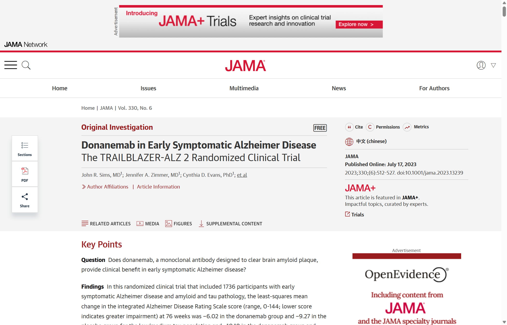
Sims JR, et al. JAMA 2023;330:512-527. PMID 37459141
TRAILBLAZER-ALZ 2：1,736 人，依 tau PET 分成低中 tau 與高 tau。
76 週 iADRS 在低中 tau 族群差 3.25 分，約減緩 35%；
CDR-SB 差 0.67 分。
安全性：ARIA-E 24.0%，其中 52 位有症狀，約 6.1%；
輸注反應 8.7%；治療組有 3 例與治療相關的死亡。
TRAILBLAZER-ALZ 2 依 tau 分層，低中 tau 者效果較好，支持越早治療越好的觀點。
兩個抗體並排比較：效果量相近，ARIA 與給藥方式不同
| 項目 | lecanemab（Clarity AD） | donanemab（TRAILBLAZER-ALZ 2） |
| 收案 | MCI／輕度失智；MMSE 22–30；類澱粉陽性 | MCI／輕度失智；MMSE 20–28；類澱粉＋tau PET |
| CDR-SB 差異 | −0.45（18 個月） | −0.70（76 週，合併族群） |
| 類澱粉清除 | −59 Centiloid | 76 週約四分之三達清除 |
| ARIA-E／有症狀 | 12.6%／2.8% | 24.0%／6.1% |
| 輸注反應 | 26.4% | 8.7% |
| 停藥策略 | 持續治療 | 類澱粉清除後可停藥 |
van Dyck CH, et al. N Engl J Med 2023;388:9-21. PMID 36449413｜Sims JR, et al. JAMA 2023;330:512-527. PMID 37459141
兩者並排比較。效果量相近，但試驗設計不同：donanemab 以 tau PET 分層、主要終點是 iADRS，所以不能直接跨試驗比較。
donanemab 的 ARIA-E 較多，有症狀比例也較高；
lecanemab 的輸注反應較多；
donanemab 可在類澱粉清除後停藥。
lecanemab 有症狀 ARIA-E 2.8% 引自 Clarity AD 全文；
donanemab 76 週清除比例依長期延伸研究的報告整理。
跨試驗比較要謹慎，族群、終點與分析方法都不同。
長期資料：3 年後差距持續擴大，早開始比晚開始好
| donanemab 長期延伸（3 年） | 結果 |
| 早開始 vs ADNI | CDR-SB −1.2（−1.7 至 −0.7） |
| 延遲開始 76 週 vs ADNI | CDR-SB −0.8（−1.3 至 −0.3） |
| 早 vs 延遲：CDR 惡化 | HR 0.73 |
| 停藥後再累積 | 每年約 2.4 Centiloid |
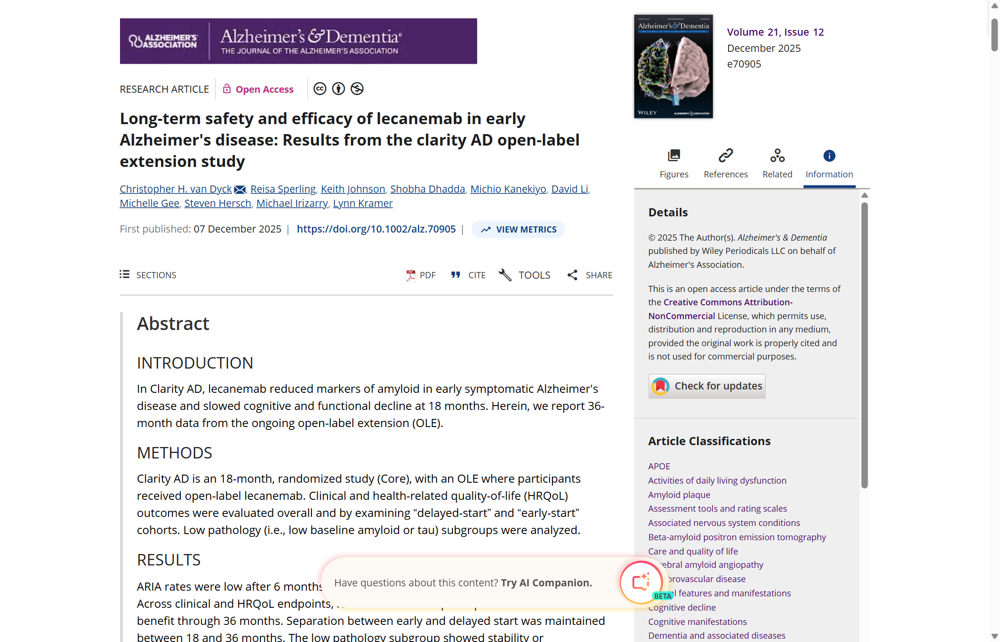
van Dyck CH, et al. Alzheimers Dement 2025. PMID 41355080｜Zimmer JA, et al. JPAD 2026. PMID 41330788
長期資料。lecanemab 的開放延伸 36 個月：早開始與延遲開始的差距持續，低病理負擔者穩定甚至改善，6 個月後 ARIA 發生率低。
donanemab 長期延伸 3 年：早開始者對比 ADNI 外部對照 CDR-SB 少惡化 1.2 分；
早開始相對延遲開始的 CDR 惡化風險比 0.73；
停藥後類澱粉每年約再累積 2.4 Centiloid。
要提醒這些都不是隨機比較。
長期延伸研究沒有隨機對照，外部對照可能有選擇偏差，解讀時要保守。
ARIA：清除血管壁類澱粉時，血腦障壁暫時破壞
Cummings J, et al. J Prev Alzheimers Dis 2023;10:362-377. PMID 37357276｜食藥署 2026-06-22 仿單修訂公告
ARIA 的機轉：抗體結合血管壁上的類澱粉，清除過程中血管壁通透性增加，形成水腫滲出的 ARIA-E，或微出血與含鐵血黃素沉積的 ARIA-H。
APOE ε4 帶因、基線微出血多、CAA 是主要危險因子。
多數無症狀，但少數嚴重甚至致命。
台灣食藥署 2026 年 6 月要求仿單加入 ARIA 加框警語。
ARIA 多數無症狀，但一定要讓病人與家屬知道要注意的症狀：頭痛、意識改變、視覺障礙與癲癇。
ARIA 與 APOE 劑量效應：同型合子約一半會發生（美國仿單）
| 有症狀 ARIA-E | leca. | dona. |
| 非帶因者 | 1% | 4% |
| 異型合子 | 2% | 7% |
| 同型合子 | 9% | 8% |
LEQEMBI 美國仿單（2026-07 修訂）；KISUNLA 美國仿單（2025-07 修訂）DailyMed
這張圖的數字直接來自美國仿單。
lecanemab 任何 ARIA：非帶因 13%、異型合子 19%、同型合子 45%；
donanemab 分別是 25%、36%、55%。
有症狀的 ARIA-E，同型合子約 8 到 9%。
東亞族群 ε4 的疾病風險更強，治療前一定要做 APOE 檢測並告知。
APOE ε4 同型合子的 ARIA 風險最高，治療決策要特別謹慎並充分告知。
改良劑量滴定：donanemab 的 ARIA-E 從 23.7% 降到 13.7%
| 輸注次數 | 改良滴定劑量 |
| 第 1 次 | 350 mg |
| 第 2 次 | 700 mg |
| 第 3 次 | 1,050 mg |
| 第 4 次起 | 1,400 mg（每 4 週） |
Wang H, et al. Alzheimers Dement 2025;21:e70062. PMID 40172303｜KISUNLA 美國仿單（2025-07）
TRAILBLAZER-ALZ 6 比較四種 donanemab 給藥方式。
24 週 ARIA-E：標準給藥 23.7%，改良滴定 13.7%，達到預設的相對風險降低目標；
類澱粉清除與藥物暴露量相當。
美國仿單在 2025 年 7 月改成 350、700、1,050，之後 1,400 毫克的滴定。
劑量滴定是藥理學上降低副作用的常用策略，這裡用實際試驗資料說明其效果。
誰適合抗類澱粉抗體？適用對象建議（AUR）的篩選流程
Cummings J, et al. JPAD 2023. PMID 37357276｜Rabinovici GD, et al. JPAD 2025. PMID 40155270
兩份適用對象建議的篩選流程。
臨床分期要是 MCI 或輕度失智；
類澱粉要以 PET 或 CSF 確認；
MRI 在一年內且微出血不超過 4 個、沒有皮質表面含鐵血黃素或明顯血管病變；
做 APOE 檢測；最後共享決策。
lecanemab AUR 建議需要抗凝血劑者不要使用。
符合條件的病人比例其實不高，篩選流程本身就是醫療資源的挑戰。
MRI 監測時程：2026 年美國與台灣仿單都把監測提前
| 藥物 | 基線 | 治療中 MRI |
| lecanemab（美國 2026-07） | 治療前 | 第 1、2、3、6 個月（例：IV 第 3 次前、皮下第 5 次前） |
| lecanemab（台灣 2026-06） | 治療前 | 新增第 3 次輸注前 |
| donanemab（美國 2025-07） | 治療前 | 第 2、3、4、7 次輸注前；高風險者加做 |
| 兩者 | — | 任何疑似 ARIA 症狀時立即 MRI |

LEQEMBI 美國仿單 2026-07；KISUNLA 美國仿單 2025-07；食藥署 2026-06-22 中文仿單修訂公告
MRI 監測時程在 2025 到 2026 年變得更密集。
美國 lecanemab 仿單 2026 年 7 月版：治療後第 1、2、3、6 個月做 MRI；
donanemab 是第 2、3、4、7 次輸注前。
台灣食藥署在 2026 年 6 月 22 日公告仿單修訂：因為極少數嚴重 ARIA 發生在第 4 次輸注前，建議 lecanemab 在第 3 次輸注前加做 MRI，並加入 ARIA 加框警語。
台灣仿單在 2026 年修訂，反映國際安全資料的累積；
治療中的 MRI 時程請依最新仿單執行。
皮下注射時代：Leqembi Iqlik 從維持到起始都可在家施打
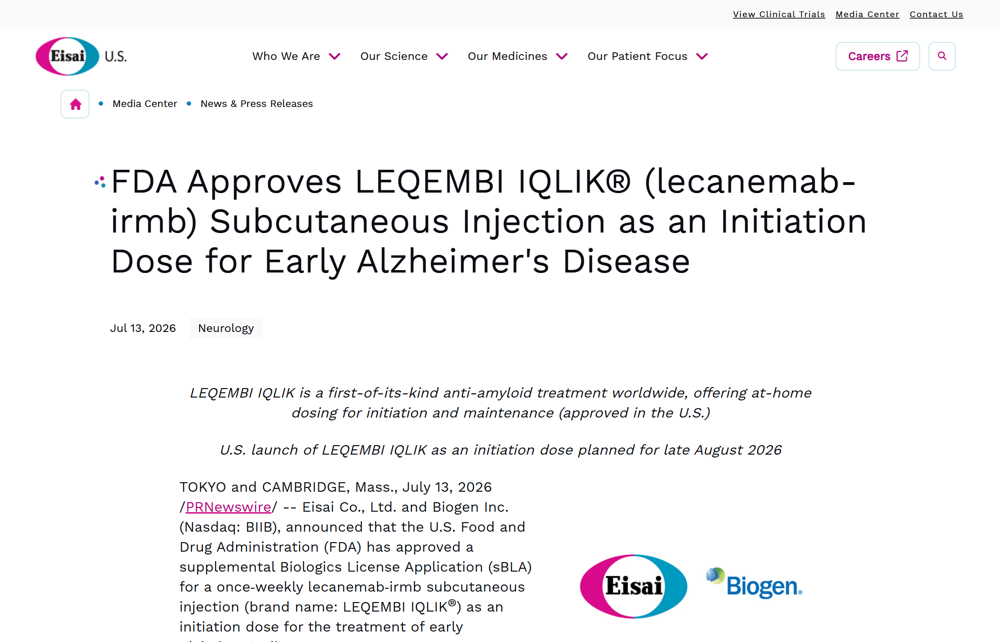
| 項目 | 內容 |
| 起始 | 皮下 500 mg 每週（兩支 250 mg 自動注射器） |
| 維持 | 皮下 360 mg 每週，或 IV 10 mg/kg 每 4 週 |
| 台灣 | Leqembi 2025-03、Kisunla 2025-04 核准；自費使用 |
Eisai 新聞稿 2026-07-13（media-us.eisai.com）｜LEQEMBI 美國仿單 2026-07｜台灣衛福部核准資訊（2025）
皮下注射。美國 FDA 在 2025 年 8 月核准 Leqembi Iqlik 每週 360 毫克皮下維持劑量，2026 年 7 月 13 日再核准每週 500 毫克的起始劑量，可在家以自動注射器施打。
台灣在 2025 年 3 月與 4 月核准 Leqembi 與 Kisunla，自費使用，6 月開始首批施打。
皮下劑型在台灣的核准狀態我沒有查到，標為尚待確認。
居家皮下注射可以減少輸注負擔，但仍需要 MRI 監測與醫療團隊的支持。
爭議：效果量是否有臨床意義？誰負擔監測與費用？
2 3 年延伸資料差距擴大
3 越早治療、病理負擔越低，效益越好
2 ARIA 風險、MRI 監測與輸注負擔
3 治療組腦容積下降較多，意義未明
Heneka MT, et al. Lancet 2024;404:2198-2208. PMID 39549715｜van Dyck CH, et al. N Engl J Med 2023;388:9-21. PMID 36449413
這是目前最有爭議的議題。支持者認為這是第一個在第三期試驗減緩臨床退化的疾病修飾治療，長期資料顯示差距擴大。
批評者質疑 CDR-SB 差 0.45 到 0.7 分是否有臨床意義、ARIA 的風險與監測負擔，以及治療組腦容積下降較多。
Heneka 2024 的 Lancet 綜述也強調醫療體系需要大幅調整。
和病人溝通時用絕對數字，說延緩，不說治癒。
請同學分組討論：如果是你的家人，你會選擇治療嗎？
理由是什麼？
2025 管線：138 個藥、182 個試驗；semaglutide EVOKE 失敗
Cummings JL, et al. Alzheimers Dement (N Y) 2025;11:e70098. PMID 40463637｜Cummings JL, et al. JPAD 2026;13:100677. PMID 42785112
Cummings 2025 的管線報告：138 個藥、182 個試驗，小分子疾病標靶 43%、生物製劑 30%、認知增強 14%、神經精神症狀 11%，三分之一是藥物再利用。
EVOKE 與 EVOKE+ 用口服 semaglutide 治療早期 AD 兩年，沒有臨床效益，只降低周邊發炎指標。
這提醒我們觀察性研究的保護關聯不能直接推論到治療。
藥物再利用是新藥管線的重要來源，但觀察性研究的保護關聯不一定能在試驗中重現。
BPSD 的處置：先找原因，再用非藥物，最後才考慮藥物
| 因子 | 例子 |
| 保護 | 熟悉的照顧者與環境、眼鏡與助聽器、個人化照護計畫 |
| 易感 | 過度或不足的刺激、視聽障礙、精神共病、失智加重、照顧者負擔 |
| 誘發 | 疼痛、飢餓、口渴、藥物改變、過冷過熱、睡眠障礙、感染 |
| 持續 | 溝通不良、誘因未被處理、照護計畫未落實、照顧者缺乏支持 |
Watt JA, et al. BMJ 2022;376:e069187. PMID 35078774
Watt 2022 BMJ 的 BPSD 處置架構：先排除譫妄，再用保護、易感、誘發、持續四類因子描述症狀。
非藥物介入是第一線；只有在症狀讓病人或照顧者非常痛苦、或有危險時才考慮藥物；
最後要定期檢討，無效或害處大於好處時停藥。
目標要個人化且可衡量，例如目標達成量表。
非藥物介入需要照顧者參與；醫師的角色是協助找出原因並設定可衡量的目標。
抗精神病藥：死亡風險警語；brexpiprazole 首個核准於 AD 激躁
| 日本第 2/3 期（10 週） | CMAI 較安慰劑 |
| brexpiprazole 2 mg | −7.2（−10.0 至 −4.3） |
| brexpiprazole 1 mg | −3.7（−6.8 至 −0.7） |
| 不良事件（1／2 mg／安慰劑） | 76.8%／84.6%／73.8% |
Nakamura Y, et al. Alzheimers Dement 2024;20:8002-8011. PMID 39369280｜FDA 核准 brexpiprazole 用於 AD 激躁（2023-05）
抗精神病藥用於失智相關精神病都有死亡風險增加的加框警語。
美國 FDA 在 2023 年 5 月核准 brexpiprazole 用於 AD 激躁，是第一個。
日本的第二三期試驗：10 週後 2 毫克組 CMAI 比安慰劑少 7.2 分，1 毫克組少 3.7 分；
不良事件發生率三組相近。但所有藥物之前，都要先處理疼痛、感染、便秘、睡眠與藥物等可逆誘因。
任何抗精神病藥都要設定停藥檢討時間，並記錄目標症狀的變化。
第一節總結：從「哪一種失智」到「怎麼治療」
第一節總結六點。休息十分鐘後，第二節進入預防：同樣的血管與生活型態因子，如何同時降低中風、失智與巴金森病的風險。
第一節結束，休息十分鐘。請同學休息時想一想：你自己的血壓、睡眠與運動是否達標？
第二節。三個疾病的預防有大量重疊：。
。
。
血壓、代謝。
運動、飲食、睡眠與環境。
我們先看負擔，再逐一看證據強度。
腦中風：全球第三大死因、第四大失能原因，每年 1,190 萬新病例
分型
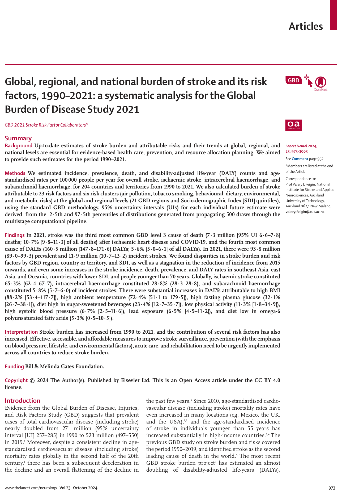
GBD 2021 Stroke Risk Factor Collaborators. Lancet Neurol 2024;23:973-1003. PMID 39304265
GBD 2021 中風報告：2021 年 730 萬人死於中風，是第三大死因；
1.6 億失能調整生命年，第四大原因；
每年 1,190 萬新病例、9,380 萬存活者。
新發中風中缺血性 65.3%、腦內出血 28.8%、蜘蛛網膜下出血 5.8%。
值得注意的是 2015 年以後發生率下降停滯，東南亞、東亞與 70 歲以下族群甚至上升。
中風負擔在年輕族群上升，與肥胖、糖尿病與高血壓年輕化有關，預防要從年輕開始。
腦內出血：只佔中風 29%，卻佔中風死亡 46%、失能負擔近一半
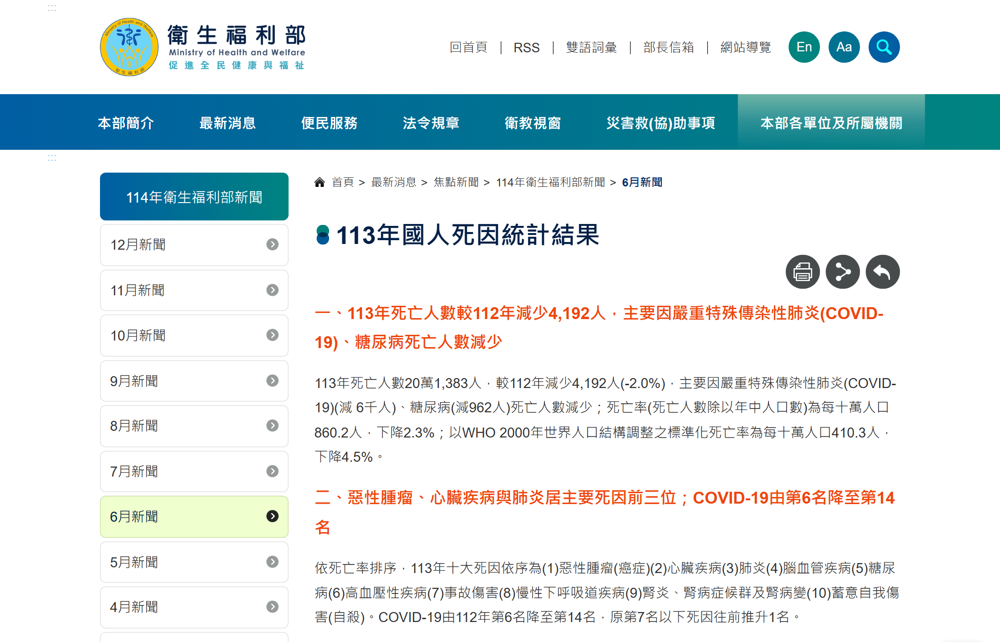
Parry-Jones AR, et al. Int J Stroke 2025;20:145-150. PMID 39629687｜衛福部 113 年死因統計
WSO 2025 的腦出血事實表：腦出血佔新發中風 28.8%，卻佔中風死亡的 45.6%、失能負擔的 49.5%，高於缺血性的 43.8%。
亞洲是重災區，東南亞、東亞與大洋洲佔全球腦出血失能負擔的 53.3%，而高收縮壓至少貢獻一半。
台灣 113 年死因統計，腦血管疾病仍是第四位，高血壓性疾病第六位。
腦出血在亞洲比例較高，高血壓控制是最有效的預防手段。
巴金森病：2050 年全球 2,520 萬人，比 2021 年增加 112%
Su D, et al. BMJ 2025;388:e080952. PMID 40044233
Su 2025 BMJ 以 GBD 2021 推估：2050 年全球 2,520 萬名巴金森病人，比 2021 年增加 112%。
人口老化貢獻 89%、人口成長 20%、盛行率改變只有 3%。
東亞將有 1,090 萬人，男性比例也上升。
巴金森病是成長最快的神經系統疾病之一。
巴金森病人數增加主要來自老化，這代表照護需求會持續上升。
同一個大腦、同一組危險因子：預防的共同路徑
小血管病
氧化壓力
（Aβ、tau、α-syn）
韌性下降
GBD 2021 Nervous System Disorders Collaborators. Lancet Neurol 2024;23:344-381. PMID 38493795｜Livingston G, et al. 2024. PMID 39096926
GBD 2021 指出神經系統疾病合計是全球失能負擔的第一名，前十名裡有中風與阿茲海默症。
這些疾病共享一組可改變的危險因子：血管、生活型態、感官與社會、環境。
機轉上它們透過血管損傷、發炎、蛋白聚集與腦儲備下降，最後分流成不同的疾病。
這張圖是教學示意，箭頭不代表每一條都有因果證據。
這張圖是第二節的地圖：同一組危險因子，透過不同機轉，導致不同的疾病。
Life's Essential 8：八項指標，分數越高，中風與失智越少
| 研究 | 比較 | 結果 |
| 開灤世代（中國） | 理想 vs 差 CVH | 中風 HR 0.33（0.20–0.54） |
| UK Biobank 316,669 人 | 最佳 vs 差 CVH | 全因失智 −44%；血管性失智 −71% |
| UK Biobank 269,816 人 | CVH 每差 1 SD | 失智 HR 1.14；PD 發生無顯著關聯 |
Lloyd-Jones 2022 PMID 35766027｜Wu 2023 PMID 37466001｜Zhou 2023 PMID 37369360｜Georgescu 2025 PMID 40235832
LE8 是 AHA 2022 提出的心血管健康指標：飲食、身體活動、尼古丁、睡眠四項行為，加上 BMI、血脂、血糖、血壓四項因素。
開灤世代理想對比差的心血管健康，中風風險比 0.33；
UK Biobank 最佳對比差，全因失智少 44%、血管性失智少 71%。
但另一個 UK Biobank 分析發現心血管健康與巴金森病的發生沒有顯著關聯，只與 PD 後的死亡有關。
舊版講義寫 PD 降 22%，我查不到可驗證來源，已刪除。
LE8 可以用在門診衛教，讓病人自己評分並設定改善目標。
第八章中風預防。重點是一連串 2024 到 2026 年的新試驗與新指引。
請特別留意此處的臨床判讀細節。
請特別留意此處的臨床判讀細節。
請特別留意此處的臨床判讀細節。
請特別留意此處的臨床判讀細節。
INTERSTROKE：十個可改變的危險因子，合計解釋 90.7% 的中風
O'Donnell MJ, et al. Lancet 2016;388:761-75. PMID 27431356
INTERSTROKE 在 32 國收了 13,447 位急性中風與 13,472 位對照。
十個可改變因子的人口可歸因風險合計 90.7%。
高血壓一項佔 47.9%，其次是缺乏規律運動、ApoB/ApoA1 比值、飲食與腰臀比。
注意個別 PAR 因為重疊，加起來會超過 100%。
高血壓對腦出血的關聯比缺血性更強。
INTERSTROKE 告訴我們：中風大多可以預防，而高血壓是第一優先。
GBD 2021：代謝風險佔中風負擔 69%，環境 37%，行為 35%
Feigin VL, et al. Int J Stroke 2025. PMID 39635884｜GBD 2021 Stroke. Lancet Neurol 2024. PMID 39304265
WSO 2025 事實表：中風歸因於代謝風險 69%、環境 37%、行為 35%，全球成本超過 8,900 億美元。
GBD 2021 發現 1990 到 2021 年增加最多的是高 BMI、高溫與高空腹血糖。
代謝疾病與氣候變遷正在推高中風負擔。
氣候變遷與高溫也成為中風的危險因子，這是近年新的公共衛生議題。
2024 AHA/ASA 中風初級預防指引：時隔十年的七個更新
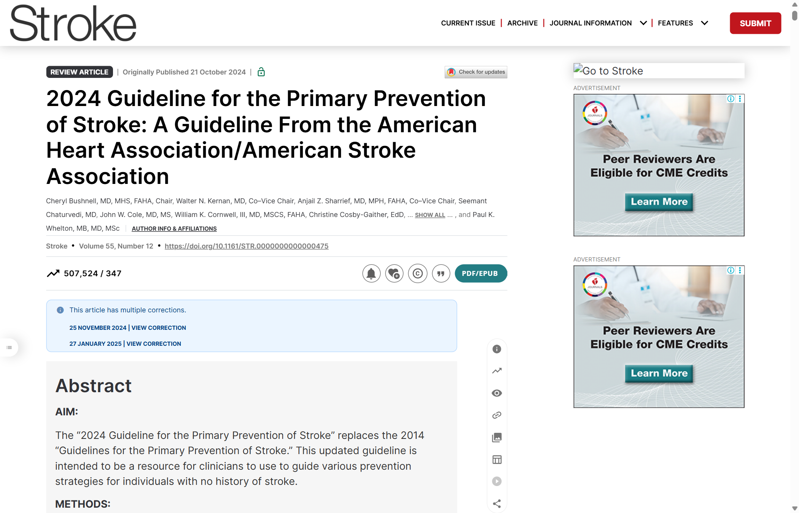
Bushnell C, et al. Stroke 2024;55:e344-e424. PMID 39429201｜Razavi AC, et al. JACC Adv 2025;4:101724. PMID 40338758
2024 AHA/ASA 中風初級預防指引取代 2014 年版。
Razavi 2025 整理七個更新：地中海型飲食、第 2 型糖尿病高風險者使用 GLP-1 促效劑、更積極的血壓目標、降血脂藥物、阿斯匹靈不作例行初級預防、動脈粥狀硬化的 colchicine，以及首度加入的性別特異建議，例如妊娠高血壓與早發停經。
建議等級細節請見原文。
指引的性別特異建議提醒我們詢問女性病人的妊娠併發症與停經史。
血壓：收縮壓目標 < 120 mmHg 在高風險亞洲族群再度證實有效
| 試驗 | 達成收縮壓 | 注意 |
| ESPRIT | 119.1 vs 134.8 | 暈厥增加（0.4% vs 0.1%） |
| BPROAD | 121.6 vs 133.2 | 低血壓、高血鉀較多 |
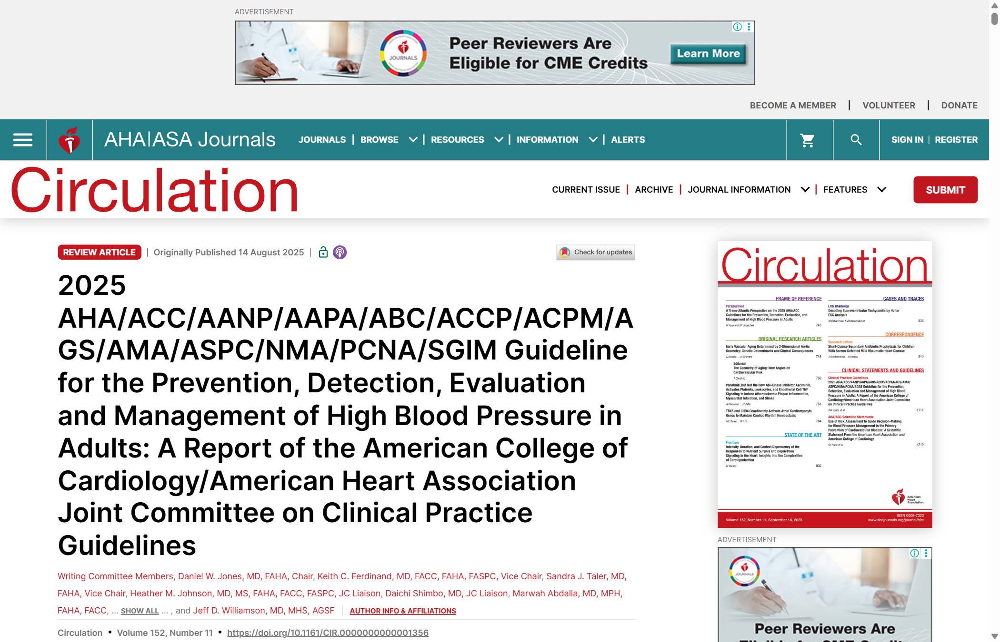
Liu J. Lancet 2024. PMID 38945140｜Bi Y. NEJM 2025. PMID 39555827｜2025 AHA/ACC 高血壓指引. PMID 40811497
ESPRIT：11,255 位高心血管風險者，收縮壓目標 120 對 140，主要心血管事件風險比 0.88，暈厥略增。
BPROAD：12,821 位糖尿病病人，風險比 0.79，低血壓與高血鉀較多。
2025 年 AHA/ACC 高血壓指引取代 2017 版；
對多數成人仍以 130/80 以下為目標，並鼓勵在可耐受時更低。
指引的完整建議等級請見原文。
積極降壓要注意暈厥、低血壓與高血鉀，特別是高齡與衰弱的病人。
代鹽（75% 氯化鈉＋25% 氯化鉀）：中風少 14%、死亡少 12%
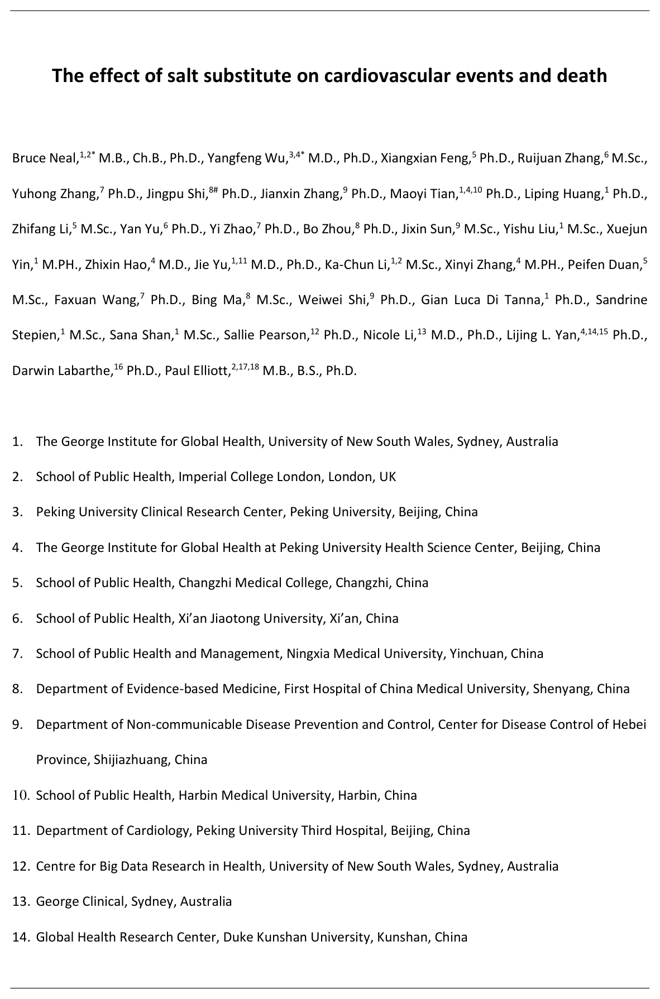
Neal B, et al. N Engl J Med 2021;385:1067-1077. PMID 34459569
SSaSS 是群集隨機試驗：600 個中國村莊，20,995 位有中風史或 60 歲以上高血壓者。
代鹽組中風率比 0.86、主要心血管事件 0.87、死亡 0.88，嚴重高血鉀沒有增加。
這是少數以硬終點證實有效的飲食介入。
但腎功能不全或用保鉀藥物的病人要先評估。
代鹽是便宜、可大規模推廣的介入，但腎功能不佳與服用保鉀藥物者要小心。
血脂、血糖、抗血小板：初級預防的三個常見問題
| 議題 | 建議方向 | 臨床重點 |
| 血脂 | 依整體 ASCVD 風險使用 statin；不耐受或未達標時加其他降脂藥 | statin 仍為首選；依風險分層決定強度 |
| 糖尿病 | GLP-1 RA 用於高心血管風險的第 2 型糖尿病 | 兼顧體重與血壓 |
| 阿斯匹靈 | 無臨床心血管疾病者不作例行初級預防 | 出血風險可能抵消效益 |
| colchicine | 穩定動脈粥狀硬化者可考慮 | 新增項目 |
Bushnell C, et al. Stroke 2024;55:e344-e424. PMID 39429201｜Razavi AC, et al. 2025. PMID 40338758
三個常見問題。血脂：依整體動脈粥狀硬化風險使用 statin。
糖尿病：高心血管風險的第 2 型糖尿病優先考慮 GLP-1 促效劑。
阿斯匹靈：沒有臨床心血管疾病的人不作例行初級預防，因為出血風險可能抵消效益。
colchicine 是這次新增的項目。
具體建議等級與 LDL 目標請以指引原文為準。
阿斯匹靈用於初級預防的觀念改變很大，請同學不要再把它當成保健品。
心房顫動：CHA₂DS₂-VASc 評中風、HAS-BLED 評出血，DOAC 為首選
| CHA₂DS₂-VASc | 分數 |
| 心衰竭 | 1 |
| 高血壓 | 1 |
| 年齡 ≥ 75 歲 | 2 |
| 糖尿病 | 1 |
| 中風／TIA／血栓栓塞 | 2 |
| 血管疾病 | 1 |
| 年齡 65–74 歲 | 1 |
| 女性 | 1 |
2 NOAC 療效與安全性不劣於甚至優於 warfarin，顱內出血較少
3 機械瓣膜置換後使用 warfarin
4 高齡者 apixaban、edoxaban 出血安全性較佳；依腎功能調整劑量
台灣腦中風學會 2024 口服抗凝血劑用於心房纖維顫動病人腦中風預防指引。台灣中風醫誌 2024;6(1):1-65
心房顫動。CHA₂DS₂-VASc 每項分數如表；
台灣腦中風學會 2024 指引建議以它評估中風風險，以 HAS-BLED 評估出血。
NOAC 與 warfarin 相比療效相近或更好，顱內出血較少；
機械瓣膜例外。高齡者 apixaban 與 edoxaban 的出血安全性較佳。
HAS-BLED 高分的意義是去矯正可逆的出血因子。
抗凝治療的最大障礙常是醫師與病人對出血的恐懼，要用數字與病人溝通。
亞臨床 AF（ARTESIA）：apixaban 減少中風，但大出血增加
| 結果 | HR（95% CI） |
| 中風／栓塞 | 0.63（0.45–0.88） |
| 大出血 | 1.80（1.26–2.57） |
Healey JS, et al. N Engl J Med 2024;390:107-117. PMID 37952132
ARTESIA：4,012 位裝置偵測的亞臨床 AF。
apixaban 使中風或全身性栓塞從每年 1.24% 降到 0.78%，風險比 0.63；
大出血從 0.94% 升到 1.71%，風險比 1.80。
換算成每年每千人約少 5 次中風、多 8 次大出血，這是我依原文年發生率相減的推算。
臨床上要依中風風險與出血風險個人化決定。
亞臨床 AF 的處置仍需個人化，這是共享決策的典型情境。
無症狀頸動脈狹窄 ≥ 70%（CREST-2）：支架加內科治療優於單純內科
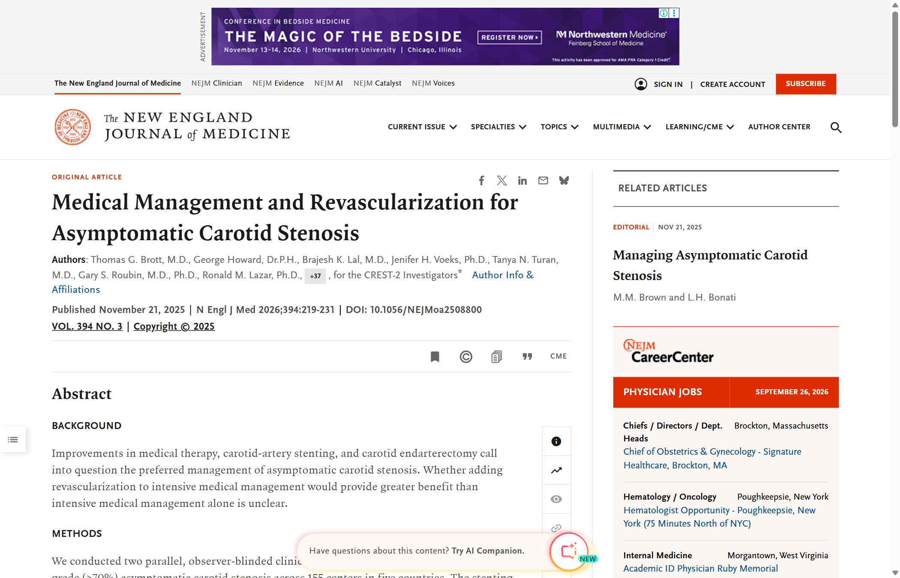
| 試驗 | P 值 |
| 支架 | 0.02 |
| 內膜切除 | 0.24（不顯著） |
Brott TG, et al. N Engl J Med 2026;394:219-231. PMID 41269206
CREST-2 在 2026 年 1 月發表：高度（70% 以上）無症狀頸動脈狹窄，比較積極內科治療單獨或加上血管重建。
支架試驗 4 年主要結果 2.8% 對 6.0%，有顯著差異；
內膜切除試驗 3.7% 對 5.3%，不顯著。
圍術期支架組有 7 次中風與 1 例死亡，所以仍需評估個別病人的手術風險與預期壽命。
CREST-2 改變了無症狀頸動脈狹窄的討論，但手術團隊的經驗與病人預期壽命仍很重要。
電子菸不是戒菸捷徑：與傳統菸併用者中風勝算最高
Zhao K, et al. Tob Induc Dis 2022;20:101. PMID 36447455
電子菸統合分析：所有電子菸使用者中風勝算比 1.25；
只用電子菸與都不用者相比 1.13，不顯著；
與傳統菸併用 1.39；以前抽傳統菸、現在只用電子菸 1.59。
這是橫斷研究，不能證明因果，但訊息很清楚：電子菸不是安全的戒菸替代，LE8 的尼古丁指標要求完全不使用。
青少年電子菸使用是公共衛生議題，醫師應主動詢問並提供戒菸資源。
口腔衛生：每天刷牙三次以上，中風風險低 22%
Chang Y, et al. J Periodontol 2021;92:87-94. PMID 32432793｜Nadim R, et al. Eur J Epidemiol 2020;35:821-833. PMID 32533373
韓國健保研究：每天刷牙三次以上，中風風險比 0.78；
齲齒四顆以上 1.28。Nadim 2020 統合分析：牙周病與失智的相對風險，高品質研究 1.38，世代研究 1.18。
這些都是觀察性關聯，刷牙習慣同時反映整體健康行為，因果推論要保守。
口腔衛生是容易被忽略的面向，可以和牙科合作推廣。
次級預防：中風或 TIA 後，每一項危險因子都要「達標」
| 危險因子 | 目標或策略 |
| 血壓 | 多數病人 < 130/80 mmHg |
| LDL | 動脈粥狀硬化病因者 LDL < 70 mg/dL；statin ± ezetimibe |
| 糖尿病 | HbA1c 個人化（多數 ≤ 7%）；優先具心血管效益藥物 |
| 抗血栓 | 非心因性：抗血小板（輕中風／高風險 TIA 短期雙重抗血小板）；AF：口服抗凝劑 |
| 生活型態 | 戒菸、地中海型飲食、規律運動、減重、限酒；篩檢睡眠呼吸中止 |
Kleindorfer DO, et al. Stroke 2021;52:e364-e467. PMID 34024117
AHA/ASA 2021 次級預防指引的核心目標：多數病人血壓低於 130/80；
動脈粥狀硬化病因者 LDL 低於 70；
糖尿病個人化控制並優先使用具心血管效益的藥物；
非心因性中風用抗血小板，輕中風或高風險 TIA 短期雙重抗血小板；
心房顫動用口服抗凝劑；加上生活型態與睡眠呼吸中止篩檢。
次級預防的關鍵是持續與達標，追蹤病人的服藥順從性與危險因子控制。
其他可改變因子：心理壓力、飲酒與腹部肥胖
O'Donnell MJ, et al. Lancet 2016;388:761-75. PMID 27431356
INTERSTROKE 其他因子的勝算比：心理社會壓力 2.20、高量或狂飲 2.09、目前吸菸 1.67、腰臀比最高三分位 1.44；
規律運動是保護因子 0.60。
注意這裡是 99% 信賴區間。
中風預防要把心理壓力、飲酒與腹部肥胖一起處理。
心理壓力與憂鬱也是中風危險因子，身心整合照護很重要。
回到陳伯伯：一張中風與失智的預防處方
| 問題 | 處置 |
| 血壓不規則服藥 | 簡化為單顆複方；目標 < 130/80，可耐受時更低；家庭血壓記錄 |
| 疑似 TIA | 影像與血管評估；抗血小板；Holter 找 AF |
| 血脂 | statin，LDL 依病因設定目標 |
| 飲食與鹽 | 代鹽（先確認腎功能與血鉀）；地中海型飲食 |
| 情緒與自殺意念 | 當天安全評估；憂鬱治療與家屬支持 |
| 認知 | MRI、認知評估；必要時 AD 生物標記；聽力篩檢 |
Kleindorfer 2021 PMID 34024117｜Liu J 2024 PMID 38945140｜Neal B 2021 PMID 34459569｜He J 2025 PMID 40258956
回到陳伯伯。處方包括：簡化降壓藥並積極達標、TIA 的血管評估與抗血小板、找 AF、statin、代鹽與地中海型飲食、當天處理自殺意念與憂鬱、認知與聽力評估。
下一章會看到，積極降壓在 2025 年的中國群集試驗中也降低了失智。
請同學嘗試為陳伯伯寫出完整的出院衛教單，涵蓋藥物、生活型態與回診計畫。
第 8 章小結：中風的 90% 可歸因於可改變因子
第八章小結。接下來第九章，同樣的危險因子，如何降低失智？
第八章結束。記住：中風預防的核心是血壓。
第九章失智預防。先看觀察性研究推估的上限。
再看隨機試驗與自然實驗真正證實什麼。
請特別留意此處的臨床判讀細節。
請特別留意此處的臨床判讀細節。
請特別留意此處的臨床判讀細節。
Lancet 2024：十四項可改變因子，理論上可預防 45% 的失智
Livingston G, et al. Lancet 2024;404:572-628. PMID 39096926（圖 9 重繪並繁中化）
這張圖是 Lancet 2024 委員會圖 9 的繁中重繪。
十四項因子的加權人口可歸因分率：早年教育 5%；
中年聽力損失 7%、高 LDL 7%、憂鬱 3%、頭部外傷 3%，缺乏運動、糖尿病、吸菸、高血壓各 2%，肥胖與過量飲酒各 1%；
晚年社會孤立 5%、空氣汙染 3%、視力損失 2%，合計 45%。
請注意這是理論上限，來自觀察性資料，不等於介入的實際效果。
這張圖是 Lancet 委員會的經典圖，請同學至少記住聽力、LDL、教育與社會孤立這幾個比例較高的因子。
生命歷程觀點：預防要從小學教室一路做到老人中心
Livingston G, et al. Lancet 2024;404:572-628. PMID 39096926｜Snowdon DA, et al. JAMA 1996;275:528-32. PMID 8606473
生命歷程觀點。早年靠教育與語言建立認知儲備；
中年是血管與感官危險因子的關鍵期；
晚年則維持社交、視力與環境品質。
修女研究：修女們 22 歲時寫的自傳，概念密度低者晚年認知較差；
後來死亡並解剖的 14 位中，低密度者全部有 AD 病理，高密度者都沒有。
樣本很小，是經典但需保守解讀的研究。
生命歷程觀點說明預防不是老年醫學專屬，而是跨越一生的公共衛生課題。
降壓預防失智：2025 年第一個以失智為主要終點的陽性試驗
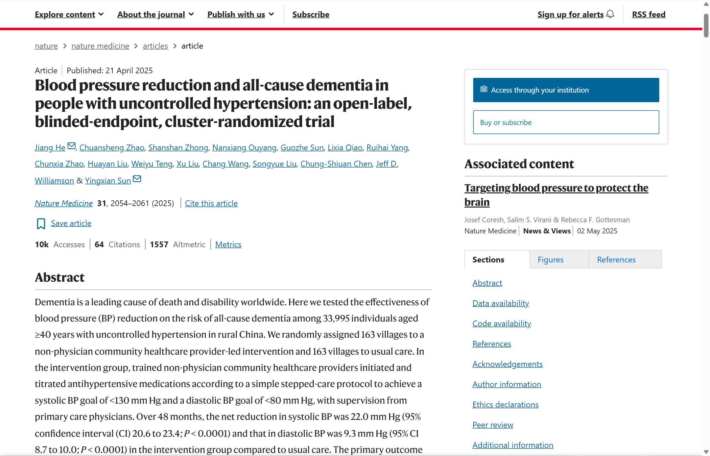
He J, et al. Nat Med 2025;31:2054-2061. PMID 40258956｜SPRINT MIND. JAMA 2019;321:553-561. PMID 30688979
CRHCP 是群集隨機試驗：326 個中國農村、33,995 位未控制的高血壓者，由非醫師的村醫依流程調藥，48 個月收縮壓淨降 22 mmHg，全因失智相對風險 0.85。
SPRINT MIND 在 2019 年，很可能失智的風險比 0.83 未達顯著，可能因提早終止而檢定力不足，但 MCI 顯著減少。
兩者合起來支持積極降壓對大腦也有益。
降壓預防失智是目前證據最強的介入之一，也是最容易在基層落實的策略。
聽力介入（ACHIEVE）：整體無差異，但高風險族群可能受益
| 3 年全面認知變化（SD） | 結果 |
| 聽力介入 | −0.200（−0.256 至 −0.144） |
| 健康衛教對照 | −0.202（−0.258 至 −0.145） |
| 差異 | 0.002（−0.077 至 0.081），P = 0.96 |
| ARIC 高風險 vs 社區志願者 | 交互作用 P = 0.010 |
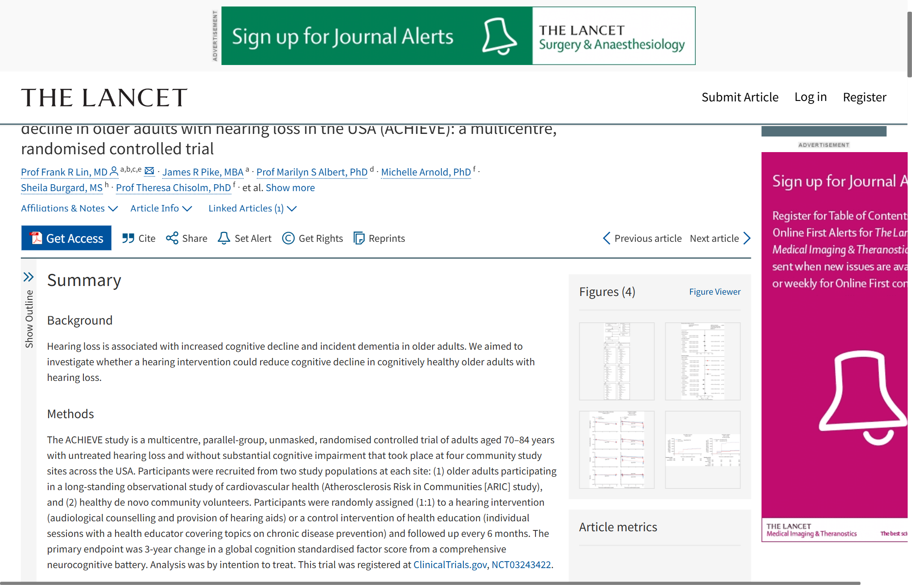
Lin FR, et al. Lancet 2023;402:786-797. PMID 37478886
ACHIEVE 試驗：977 位 70 到 84 歲、聽力損失但未治療者，助聽器與聽力諮詢對照健康衛教。
主要分析 3 年認知變化沒有差異。
但預設的敏感度分析顯示來自 ARIC 世代、認知退化風險較高的族群效果不同，交互作用 P 等於 0.010。
WHO 2026 年的更新指引把助聽器納入降低失智風險的策略。
聽力與失智的關係是近年研究熱點，至少要做到篩檢與轉介。
多領域生活型態介入：FINGER 與 US POINTER 都達到主要終點
| FINGER（芬蘭） | US POINTER（美國） | |
| 人數 | 1,260；60–77 歲、CAIDE ≥ 6 | 2,111；60–79 歲、久坐且飲食不佳 |
| 介入 | 飲食、運動、認知訓練、血管監測 vs 一般衛教 | 結構化 vs 自主式多領域介入 |
| 期間 | 2 年 | 2 年 |
| 主要結果 | NTB 每年差 0.022（P = 0.030） | 全面認知每年差 0.029 SD（P = 0.008） |
| 次要發現 | 介入組不良事件 7% vs 1% | APOE ε4 帶因者同樣受益 |
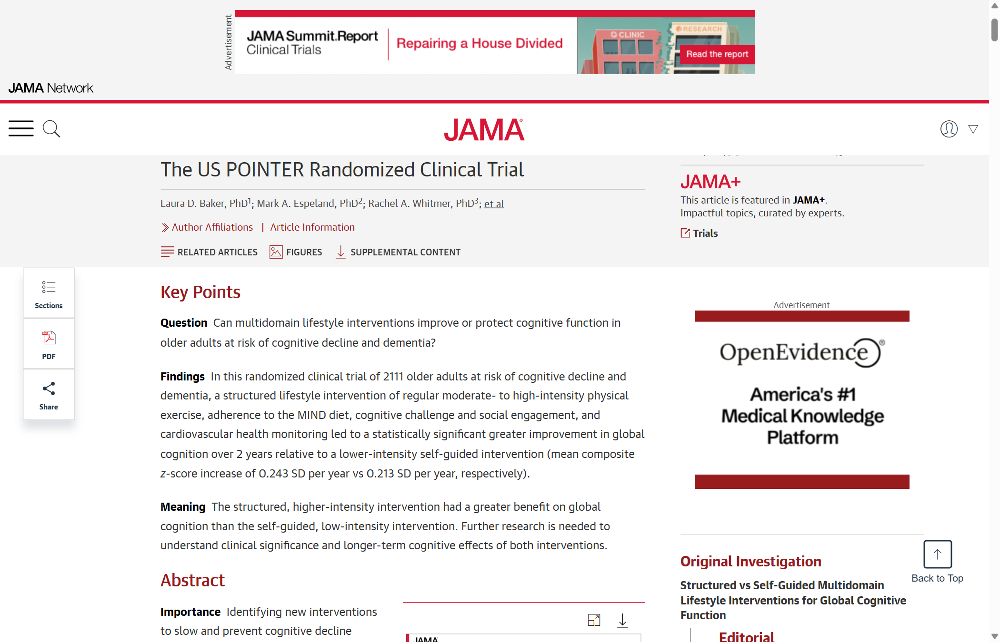
Ngandu T, et al. Lancet 2015;385:2255-63. PMID 25771249｜Baker LD, et al. JAMA 2025;334:681-691. PMID 40720610
兩個多領域介入試驗。FINGER：1,260 位高風險芬蘭長者，兩年介入，神經心理測驗總分每年差 0.022 個標準差。
US POINTER：2,111 位美國長者，比較結構化與自主式介入，結構化組每年多 0.029 個標準差，APOE ε4 帶因者也受益。
效果不大但一致，台灣的在地化方案可以參考。
多領域介入的效果不大但穩定，重點是持續與可近性。
飲食：MIND 飲食試驗是陰性結果
Barnes LL, et al. N Engl J Med 2023;389:602-611. PMID 37466280｜Morris MC, et al. Alzheimers Dement 2015. PMID 26086182
MIND 飲食試驗：604 位長者、3 年，兩組都有輕度熱量限制。
全面認知兩組都進步，差異 0.035 不顯著，MRI 也沒有差異。
這個陰性結果不代表飲食不重要：對照組也接受營養諮詢與減重，試驗期間可能太短。
WHO 2026 仍建議健康飲食。
陰性試驗同樣重要，它提醒我們觀察性研究與試驗結果的差距。
身體活動：每天約 9,800 步、步伐每分鐘 112 步，失智風險最低
Del Pozo Cruz B, et al. JAMA Neurol 2022;79:1059-1063. PMID 36066874
UK Biobank 的加速度計研究：每天 9,826 步時失智風險最低，風險比 0.49；
每天只要 3,826 步也有 0.75。
步伐每分鐘 112 步的 30 分鐘最高步頻，風險比 0.38。
圖中以一減風險比呈現下降幅度。
要注意反向因果：前驅期的人本來就活動較少。
運動是同時對中風、失智與巴金森病都有好處的介入，請同學先從自己做起。
睡眠、糖尿病與低血糖：中年短睡與反覆低血糖都與失智相關
Sabia S, et al. Nat Commun 2021;12:2289. PMID 33879784｜Kim YG, et al. Diabetes Metab J 2020;44:125-133. PMID 31701690
Whitehall II：50 歲與 60 歲時每晚睡 6 小時以下，失智風險比 1.22 與 1.37；
三個時間點都短睡，風險增加約 30%。
糖尿病則是雙向關係：高血糖與波動增加風險，反覆低血糖也增加失智，而失智又讓低血糖更常發生。
高齡者的血糖目標要避免低血糖。
睡眠不足與睡眠呼吸中止都應積極處理，高齡糖尿病患者要避免低血糖。
帶狀皰疹疫苗：兩個國家的自然實驗，都指向失智減少
| 研究 | 設計 | 結果 |
| 威爾斯（Nature 2025） | 1933-09-02 前後出生者；疫苗接種率 0.01% vs 47.2% | 7 年新診斷失智絕對減少 3.5 個百分點（相對 −20%） |
| 加拿大安大略（Lancet Neurol 2026） | 1946-01-01 前後出生者 | 5.5 年新診斷失智絕對減少 2.0 個百分點 |
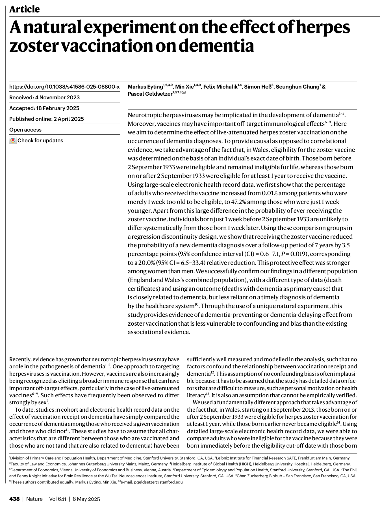
Eyting M, et al. Nature 2025;641:438-446. PMID 40175543｜Pomirchy M, et al. Lancet Neurol 2026;25:170-180. PMID 41579903
兩個自然實驗。威爾斯規定 1933 年 9 月 2 日以後出生者才有疫苗資格，差一週出生的人接種率從 0.01% 跳到 47.2%，其他特徵相同。
結果接種疫苗使 7 年內新診斷失智絕對減少 3.5 個百分點，相對 20%。
加拿大安大略的研究也發現 5.5 年減少 2.0 個百分點。
這是目前最接近因果的失智預防證據之一。
目前臨床使用的重組疫苗是否有相同效果，仍需更多研究。
自然實驗是流行病學中很有力的設計，請同學理解它為什麼比一般觀察性研究更接近因果。
環境危險因子：空汙、噪音、輪班與綠地
| 類別 | 與全因失智相關的因子 |
| 空氣汙染 | PM2.5、PM10、NO₂、NOx、CO |
| 工作 | 輪班、夜班 |
| 環境 | 慢性噪音、極低頻磁場（風險）；社區綠地（保護） |
| 單一研究證據 | SO₂、道路距離、鋁、溶劑、農藥、二手菸 |
Jones A, et al. Environ Res 2025;270:121007. PMID 39889875｜WHO 2026-07-15 新聞稿
Jones 2025 的傘狀統合分析：與全因失智相關的環境因子包括細懸浮微粒、懸浮微粒、二氧化氮、氮氧化物、一氧化碳、輪班、夜班、慢性噪音與極低頻磁場，社區綠地則有保護作用。
WHO 2026 年的新指引首度把減少空汙暴露納入建議。
各因子的相對風險數字請見原文。
環境因子需要政策介入，個人層面可以減少暴露，但根本改善仍靠公共政策。
藥物能預防失智嗎？觀察性研究樂觀，隨機試驗保守
| 藥物 | 證據 | 結果 |
| statin | 55 個觀察性研究、> 700 萬人 | 失智 HR 0.86（0.82–0.91） |
| GLP-1 RA vs DPP4i | Medicare 目標試驗模擬 | RR 0.83（0.61–1.05），整體不顯著 |
| semaglutide（EVOKE） | 早期 AD 的 RCT | 無臨床效益 |
| 穿透 BBB 的 RAS 藥物 | 14 世代、12,849 人 | 記憶表現較佳（關聯） |
Westphal Filho 2025 PMID 39822593｜Inoue 2025 PMID 40690769｜Cummings 2026 PMID 42785112｜Ho 2021 PMID 34148364
藥物預防。statin 在 55 個觀察性研究中與失智風險下降 14% 相關；
GLP-1 促效劑在嚴謹的目標試驗模擬中整體不顯著，semaglutide 的 EVOKE 試驗也失敗；
穿透血腦障壁的 RAS 藥物與較好的記憶表現相關。
原則是依原本的適應症用藥，不要為了預防失智而開藥。
藥物預防的證據仍不足，請同學不要為了預防失智而開藥。
認知訓練：ACTIVE 20 年追蹤，速度訓練＋加強課程失智 −25%
Coe NB, et al. Alzheimers Dement (N Y) 2026;12:e70197. PMID 41669119
ACTIVE 是 1990 年代末的四臂隨機試驗。
2026 年連結 Medicare 資料 20 年追蹤：速度訓練且完成加強課程者，失智診斷風險比 0.75；
沒有加強課程者沒有效果；記憶與推理訓練無效。
這是次級分析，也有學者重新分析後提出不同看法，所以解讀要保守。
WHO 2026 建議認知訓練與認知刺激。
認知訓練的長期效果仍有爭議，但保持大腦活躍對生活品質本身就有益。
WHO 2026 更新指引：建議做什麼、不建議吃什麼
| 建議 | 內容 |
| 生活型態 | 身體活動、戒菸、減少飲酒、健康飲食 |
| 認知與社交 | 認知訓練與認知刺激（正常或 MCI）、社交參與 |
| 疾病管理 | 高血壓、糖尿病、高膽固醇 |
| 新增 | 減少空氣汙染暴露；助聽器 |
| 不建議 | 無缺乏時補充維生素 B、E、omega-3 或綜合維生素 |
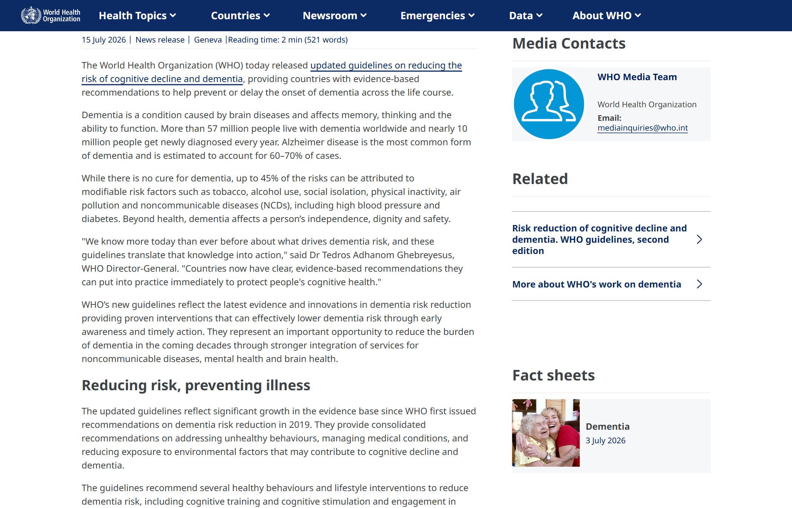
WHO. Risk reduction of cognitive decline and dementia: WHO guidelines, 2nd ed. 2026-07-15（who.int）
WHO 在 2026 年 7 月 15 日發布第二版失智風險降低指引，取代 2019 年版。
建議包括身體活動、戒菸、減少飲酒、健康飲食、認知訓練與刺激、社交參與，以及高血壓、糖尿病與高膽固醇的管理。
新增兩項：減少空氣汙染暴露與助聽器。
不建議在沒有缺乏時補充維生素 B、E、omega-3 或綜合維生素。
各項建議的強度等級請見指引全文。
WHO 指引是公共衛生層級的建議，可以作為門診衛教與社區推廣的依據。
第十章巴金森病的預防。這個領域最大的陷阱是反向因果：。
。
。
。
前驅期症狀會改變行為。
巴金森病的保護與危險因子：效果量都不大，而且要小心反向因果
Grotewold N, Albin RL. Parkinsonism Relat Disord 2024;125:107026. PMID 38879999
Grotewold 2024 的更新回顧。
保護因子：吸菸勝算比約 0.4 到 0.6，咖啡因約 0.7，中高強度運動約 0.65，高尿酸風險降低約三分之一；
危險因子：空汙 1.1 到 1.2、有機溶劑 1.4、牛奶 1.4、鉛 1.5、幽門桿菌 1.6、頭部外傷 1.6。
圖中有幾個值是由範圍取中點或換算，已在圖下註明。
作者提醒吸菸、咖啡與尿酸的關聯可能是反向因果；
真正值得介入的是運動、環境暴露、糖尿病與頭部外傷。
絕不要把吸菸當預防建議。
反向因果是巴金森病流行病學最大的陷阱，請同學學會辨識。
農藥：巴拉刈、魚藤酮 OR 2.5；住高爾夫球場 1 英里內 OR 2.26
Tanner CM, et al. EHP 2011. PMID 21269927｜Krzyzanowski B, et al. JAMA Netw Open 2025. PMID 40338549｜農業部公告
Tanner 2011：使用巴拉刈或魚藤酮者，巴金森病勝算比都約 2.5。
2025 年 JAMA Network Open：住在高爾夫球場 1 英里內，勝算比 2.26；
同一供水區有球場 1.96；
脆弱地下水區 1.82，指向飲水途徑。
台灣巴拉刈原訂 2019 年禁用，延後一年，自 2020 年 2 月 1 日起全面禁止販售與使用。
詢問職業與居住環境史是神經科病史的一部分，特別是農業地區的病人。
運動與地中海飲食：兩個可以直接給病人的建議
Jiang Y, et al. J Neurol 2024;271:7434-7459. PMID 39363041｜Zhao J, et al. J Nutr Health Aging 2025;29:100451. PMID 39693849
Jiang 2024 統合分析 21 個觀察性研究：高身體活動相對風險 0.77，每增加 10 MET 小時每週約降 9%。
Zhao 2025：地中海飲食最高對最低勝算比 0.75，前驅期 0.67，60 歲以下效果較強。
這些都是觀察性研究，但運動與飲食本身對心血管與失智都有好處，是最容易給的建議。
運動對已診斷的巴金森病人也有益，是少數同時具預防與治療價值的介入。
孤獨：UK Biobank 49 萬人追蹤 15 年，巴金森病風險增加 25%
Terracciano A, et al. JAMA Neurol 2023;80:1138-1144. PMID 37782489
Terracciano 2023：491,603 位 UK Biobank 參與者，15 年內 2,822 位發生巴金森病。
孤獨的完整校正風險比 1.25。
關鍵是時間分層：前 5 年不顯著，5 年之後 1.32，這不像前驅症狀造成的反向因果。
社交連結在失智與巴金森病預防中都有角色。
孤獨同時影響失智與巴金森病，社會處方是值得推廣的策略。
前驅期巴金森病：RBD 與嗅覺減退是最強的線索
| 類別 | 標記 |
| 危險標記 | 年齡、男性、農藥與溶劑、非吸菸、少咖啡、基因（含多基因風險分數）、糖尿病、缺乏運動、男性低尿酸 |
| 前驅標記 | PSG 確診 RBD、嗅覺減退、便秘、尿失禁或勃起障礙、姿勢性低血壓、日間嗜睡、憂鬱焦慮、整體認知缺損 |
| 生物標記 | DAT 影像異常；α-syn SAA（RBD 或嗅覺減退者 86% 陽性） |
Heinzel S, et al. Mov Disord 2019;34:1464-1470. PMID 31412427｜Siderowf A, et al. 2023. PMID 37059509
MDS 2019 更新的前驅期巴金森病研究準則，以似然比計算個人的前驅期機率。
危險標記與前驅標記如表，新增糖尿病、整體認知缺損、缺乏運動與男性低尿酸。
嗅覺減退的陽性似然比在這次更新中上升。
前驅族群 SAA 陽性率 86%。
特發性 RBD 是最強的單一前驅標記。
前驅期的辨識讓疾病修飾試驗有機會提早介入，但告知需要謹慎。
疾病修飾的曙光：lixisenatide 讓早期 PD 動作分數 12 個月幾乎不變
| 項目 | 結果 |
| 組間差異 | 3.08 分（0.86–5.30），P = 0.007 |
| 噁心 | 46% |
| 嘔吐 | 13% |
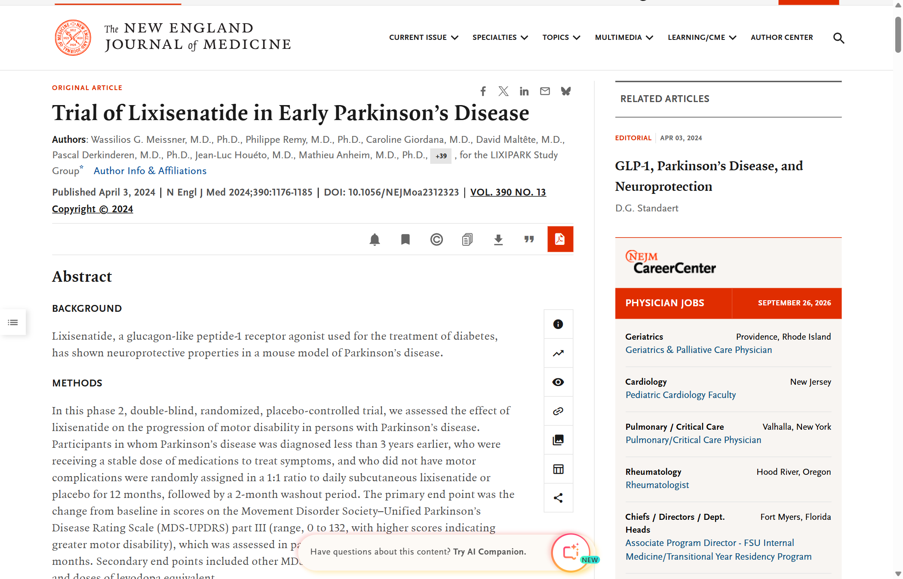
Meissner WG, et al. N Engl J Med 2024;390:1176-1185. PMID 38598572
LIXIPARK：156 位早期巴金森病，每日皮下 lixisenatide 12 個月，MDS-UPDRS 第三部分幾乎不變，安慰劑惡化 3 分，差異 3.08 分；
但噁心 46%、嘔吐 13%。
這是第 2 期試驗，需要更大、更長的試驗確認。
與失智的 EVOKE 試驗對照，GLP-1 在不同疾病的結果並不一致。
GLP-1 促效劑在巴金森病的第 2 期結果令人期待，但仍需第 3 期確認。
巴金森病預防：把因子放進「可調整 × 證據強度」矩陣
較強
成長中
Grotewold 2024 PMID 38879999｜Terracciano 2023 PMID 37782489｜Krzyzanowski 2025 PMID 40338549
把巴金森病的因子放進矩陣。左上角證據較強且可調整：運動、減少環境暴露、減少孤獨與飲食。
右上角是用來分層與溝通的因子。
下方是證據仍在累積的項目。這張矩陣整理自舊版講義並更新引用。
矩陣幫助我們把有限的資源投入最有機會的介入。
結語：一張處方，同時保護血管、記憶與動作
最後一張處方。九個面向同時保護血管、記憶與動作。
回到陳伯伯：他需要的不只是一顆失智藥，而是從血壓、代鹽、運動、聽力、情緒到社交的整合照顧。
謝謝大家。
最後請同學為自己寫一張腦健康處方，三個月後再回來看看做到了幾項。
主要參考文獻與討論

主要參考文獻。完整書目如下（依投影片順序）：見 refs/references.md 與講義附件。
歡迎提問與討論。
開放提問。講義附上完整書目與健保條文查核紀錄，歡迎課後討論。